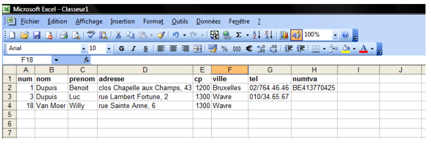
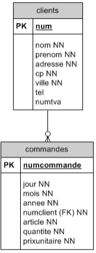
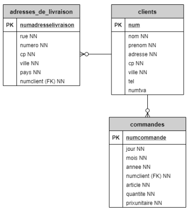
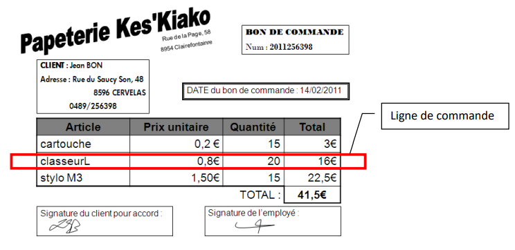
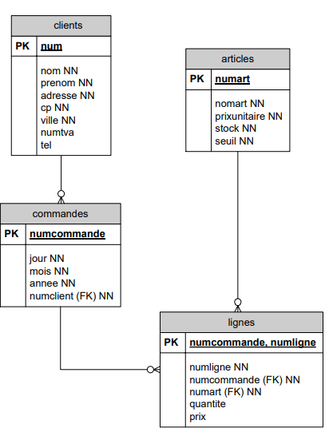
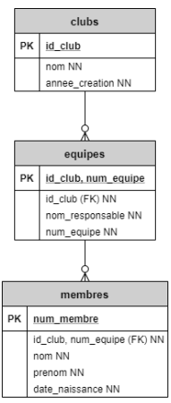
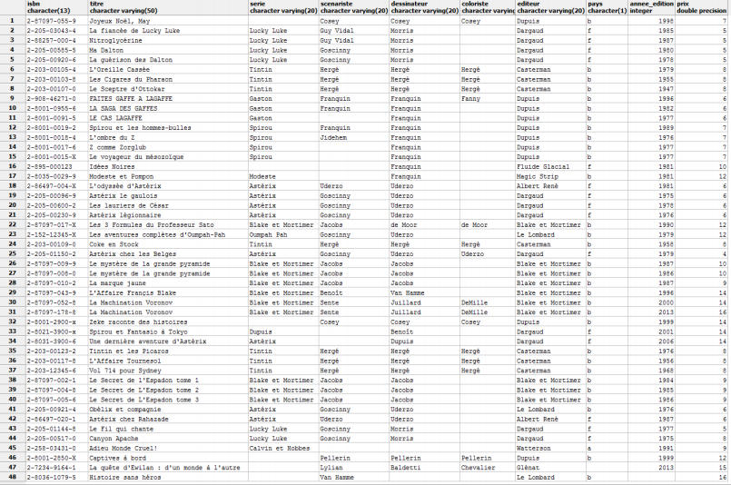
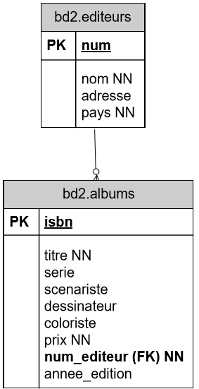
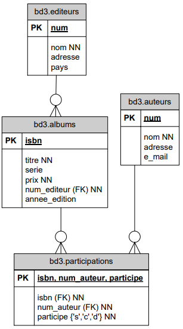

Partie SQL 1ère année :
Introduction à SQL :
L'informatique, comme le suggère son nom, est un ensemble de techniques destinées essentiellement à conserver et à manipuler des informations.
En informatique, il est très fréquent de rencontrer encore et encore le même problème. Avec l’expérience, on peut évaluer les différentes solutions qui ont été apportées et choisir celle qui tient le mieux la route. Ce choix est d’ailleurs souvent très pragmatique : c’est la solution qui survit à l’épreuve du temps qui finit par être universellement acceptée.
Elle est particulièrement efficace dès qu'il s'agit de manpuler de grandes quantités d'informations de structure similaire, comme des listes de personnes (membres, clients, etc.), des listes d'articles, des séries de factures ou de contrats, etc.
De nombreuses organisations logiques et physiques ont été imaginées pour répondre à ce type de besoin, surtout depuis que les percées de l'électronique ont permis de créer des ordinateurs. Ainsi, on a d'abord parlé de "fichiers" : un fichier est une suite d'informations, en général toutes de même structure, conservées sur support électronique (disque dur, clé USB, etc.). Lorsqu'on a dû manipuler plusieurs fichiers et effectuer des traitements où leurs contenus interagissent, on s'est rendu compte qu'il valait mieux parler de "bases de données", qui sont essentiellement des ensembles de fichiers présentant certains liens entre eux.
Ainsi, dans le courant des années 1960, il existait un besoin grandissant d’automatiser la gestion des données. Non seulement il fallait pouvoir stocker ces données, mais en plus il fallait trouver un mécanisme permettant de les exploiter : récupérer les données, les faire évoluer d’une manière consistante, faire des croisements entre plusieurs informations, consolider des résultats, etc. Il y avait donc un besoin d’exprimer toutes sortes de requêtes et manipulations sur les données. Mais développer des algorithmes spécifiques à chaque besoin spécifique aurait été coûteux et contreproductif. C’est pourquoi Edgar F. Codd publia en 1970 un article intitulé "A Relational Model of Data for Large Shared Data Banks" proposant une manière de les représenter et de les manipuler. Cette approche donna naissance au langage SQL : Structured Query Language.
SQL de nos jours :
SQL reste de nos jours incontestablement le standard pour gérer la persistance des données. SQL est tellement omniprésent sur Internet que probablement tous les sites web que vous fréquentez l’utilisent. Il commence aussi à avoir une grande présence sur les Smartphones pour toutes les applications ayant des données non triviales à gérer. Vous retrouverez SQL au cœur de la gestion des données de presque tous les systèmes informatique : applications bancaires, médicales, cartographie, multimédia, etc.….
Le marché est composé de poids lourds commerciaux (Access, SQL Server, DB2, Informix, Oracle, Microsoft, Sybase, …), mais aussi de produits issus du monde du logiciel libre (Ingres, MySQL, PostgreSQL, SQLite, …). SQL est un langage qui est normalisé mais reste très complexe. Ainsi chaque vendeur n’implémente qu’un sous ensemble plus ou moins complet du langage. De plus la concurrence étant bien présente, chaque vendeur essaie de se sortir du lot par des extensions qui lui sont propre. Au final, il y a un tronc SQL commun à toutes ces bases de données (BD), mais on se retrouve assez rapidement à utiliser des instructions qui sont spécifiques à un vendeur particulier.
Dans le cadre de ce cours, nous utiliserons PostgreSQL. C’est un logiciel libre et donc gratuit. PostgreSQL est un Système de Gestion de Bases de données (noté SGBD ou, en anglais, DBMS (DataBase Management System)) relationnelles. Il attache une grande importance au respect de la norme SQL. C’est un produit moderne, avec une communauté de développeur très active. Il est fréquemment utilisé en milieu professionnel et il est fort probable que vous le rencontrerez à un moment ou un autre de votre future carrière. Pour toutes ces raisons nous avons choisi ce logiciel.
RDBMS (Relational Database Management System) :
Le modèle relationnel :
Différentes générations de bases de donénes se sont succédé (hiérarchique, en réseaux et relationnelle), et les plus utilisées actuellement sont les "bases de données relationnelles", qui se sont répandues depuis les années 1980.
Une base de données relationnelle est constituée d'un ensemble de "relations", souvent appelées "tables".
Chaque table est divisée d'une part en colonnes et d'autre part en lignes.
Les colonnes sont les "attributs" (ou les "champs"). Elles sont désignées par leur numéro d'ordre (1, 2, 3, ...) ou par des noms d'attributs; dans ce dernier cas, l'ordre des colonnes est sans importance. Chaque attribut peut se voir imposer un "domaine", c'est-à-dire l'ensemble de toutes les valeurs possibles de cet attribut.
Les lignes sont appelées les "tuples" : elles correspondent plus ou moins aux "enregistrements" des fichiers classiques, à ceci près qu'une table n'est pas considérée comme une séquence de tuples, mais bien comme un ensemble (au sens mathématique) de tuples. Ceci entraîne deux conséquences :
- L'ordre des tuples est sans importance (c'est-à-dire que rien ne garantit un ordre déterminé, même pas l'ordre chronologique dans lequel les tuples ont été mis dans la table; cependant, le programmeur peut toujours, lors de l'affichage ou de l'impression d'une table, choisir un ordre bien précis).
- Deux tuples devraient toujours être distincts l'un de l'autre. On ne devrait jamais avoir dans une même table deux tuples qui soient exactement identiques.
Les SGBD ont tous recours au langage SQL pour :
- créer des tables (vides).
- insérer des informations (appelées "tuples") dans ces tables.
- modifier ou supprimer certaines de ces informations.
- consulter, de façon souple et puissante, les informations ainsi emmaganisinées.
La définition en "intention" d'une base de données est constituée de la liste de ses tables, avec, pour chacune d'elles, la liste des attributs et de leurs domaines, ainsi que d'une série de "contraintes d'intégrité", servant à garantir la cohérence des donénes : cette définition, qui n'inclut pas le contenu actuel des tables, est la partie permanente, fixe de la base de données.
La définition en "extension" d'une base de données est constituée du contenu actuel de ses tables, c'est-à-dire des ensembles de tuples qu'elles contiennent.
La liste des attributs, c'est-à-dire le titre des colonnes, donne la structure de la table, elle indique la liste des informations qui vont être stockées pour chaque tuple.
Commençons par un exemple simple dans un classeur Excel :
Dans cet exemple, on conserve la liste de tous les clients d'une entreprise et pour chaque client, on mémorise :
- son numéro
- son nom
- son prénom
- son adresse (rue et numéro)
- son code postal
- sa commune
- son numéro de téléphone
- son numéro de TVA
De manière similaire, dans une base de données, les informations sont contenues dans une table.
| num | nom | prenom | adresse | cp | ville | tel | numtva |
|---|---|---|---|---|---|---|---|
| 1 | Dupuis | Benoit | clos Chapelle aux Champs, 43 | 1200 | Bruxelles | 02/764.46.46 | BE413770425 |
| 3 | Dupuis | Luc | rue Lambert Fortune, 2 | 1300 | Wavre | 010/34.65.67 | |
| 18 | Van Moer | Willy | rue Sainte Anne, 6 | 1300 | Wavre |
Pour représenter la table, il est d'usage d'utiliser un diagramme de structure de données (DSD).
Par exemple, le DSD de la table clients ressemble à :
| clients |
|
num nom prenom adresse cp ville tel numtva |
Ces huit éléments sont les attributs de la table des clients. Ils sont fixés lors de la création de la table, et existent donc quand la table est encore vide.
Les véritables informations, c'est-à-dire les coordonnées des clients réels, seront les tuples de la table, chaque client constituant un tuple.
Lors de sa création, la table clients définit 8 attributs. Normalement, cela ne changera pas. Si l'on a spécifié que le numéro est un nombre entier positif et que le nom est une suite de caractères de longueur maximale à 25, ces spécifications ne changeront pas non plus. Nous verrons en deuxième qu'il est quand même possible de modifier ces définitions.
CREATE_TABLE :
Pour créer une table, on utilise l'instruction CREATE TABLE :
CREATE TABLE nom_table ( [
{ nom_colonne type_donnees [ DEFAULT default_expr ] [ contrainte_colonne [...] ]
| contrainte_table }
[, ... ]
] )Cette représentation respecte les conventions syntaxiques suivantes :
MOT en MAJUSCULE = clause ou élément de l'instruction (mot réservé)
[] → élément facultatif
{ ... } → élément facultatif qui peut être répété
| → désigne une alternative (OU exclusif)Cette syntaxe de présentation est fréquemment utilisée dans les brochures.
-
contrainte_colonne peut être :
[ CONSTRAINT nom_contrainte ] { NOT NULL | NULL | UNIQUE | PRIMARY KEY | CHECK ( expression ) | REFERENCES table_reference [ ( colonne_reference ) ] } -
contrainte_table peut être :
[ CONSTRAINT nom_contrainte ] { UNIQUE ( nom_colonne [, ... ] ) | PRIMARY KEY ( nom_colonne [, ... ] ) | CHECK ( expression ) | FOREIGN KEY ( nom_colonne [, ... ] ) REFERENCES table_reference [ ( colonne_reference [, ... ] ) ] }
Pour la table clients, l'instruction est la suivante :
CREATE TABLE clients
(
num INTEGER NOT NULL,
nom VARCHAR(25) NOT NULL,
prenom VARCHAR(15) NOT NULL,
adresse VARCHAR(30) NOT NULL,
cp INTEGER NOT NULL,
ville VARCHAR(20) NOT NULL,
tel VARCHAR(11) NULL,
numtva VARCHAR(10) NULL
);Après le nom de la table, on définit les attributs. Pour chaque attribut : le premier correspond au nom de l'attribut, lesecond au type de l'attribut et enfin s'il peut être omis ou pas.
-
Les conventions d'écriture :
Les noms de tables et d'attributs sont choisis par celui qui crée la table, de façon assez libre, mais en respectant toutefois certaines règles. Ils ne peuvent pas par exemple contenir des lettres accentuées (prenom et non prénom), ni espaces, ni caractères spéciaux.
Par contre les mots-clés (CREATE, TABLE, NULL, etc.) doivent absolument figurer exactement tels quels, de mêmes que les signes particuliers : parenthèses, virgules, etc.
Seule la mise en page est totalement libre : alognement, espacements, identation, passages à la ligne. Provitons donc de cetteliberté pour améliorer la clarté et la visibilité de nos instructions.
La sensibilité à la casse :
Les mots clés ainsi que ls noms de tables et d'attributs sans guillemets doubles, sont insensibles à la casse.
Écrire CREATE TABLE CLIENTS (...) revient au même qu'écrire crEAtE taBLe cLIEnts (...).
Toutefois, une convention couramment utilisée revient à écrire les mots clés du langage en majuscule et les noms en minuscule, c'est-à-dire : CREATE TABLE CLIENTS (...).
On peut délimiter un identificateur en utilisant les doubles guillemets. Cela permet alors d'avoir des identifiants composés de n'importe quel caractère spécial (majuscule, minuscule, espace, ...). Exemple : CREATE TABLE "Un nOm 2 taBle trOp fUn !".
Les valeurs des attributs sont, elles, sensibles à la casse. Effectivement, si dans la table clients, l'un des clients porte le nom 'Dupont', cela est différent de la valeur 'dupont'.
Une chaîne de caractères en SQL est une séquence arbitraire de caractères entourée par des guillemets simples ('), c'est-à-dire 'Ceci est une chaîne'. Pour inclure un guillemet simple dans une chaîne constante,chaisissez deux guillemets adjacents, par exemple 'L''odyssée d''Astérix'. Notez que ce n'est pas un guillemet double (").
-
Les types :
Il existe différents types pour définir les attributs. Certains sont propres au SGBD, d'autres sont conformes à la norme SQL.
-
Types champs de bits :
Les champs de bits sont des chaînes de 0 et de 1. Ils peuvent être utilisés pour stocker ou visualiser des masques de bits. Il y a deux types de bits SQL : bit (n) et bit varying (n), où n estun entier positif.
Les données de type bit doivent avoir une longueur de exactement n bits. Essayer d'y affecter une chaîne de bit longue ou plus courte déclenche une erreur. Les données de type bit varying ont une longueur variable, mais ne peuvent dépasser une taille de n bits. Les chaînes plus longues sont rejetées. Écrire bit sans longueur indique une taille illimitée.
-
Type booléen :
Le type booléen ne peut avoir que deux valeurs : true et false (ou encore la valeur NULL).
true peut s'écrire littéralement de plusieurs manières : t, true, yes, y ou 1.
false peut s'écrire littéralement des manières suivantes : false, f, no, n ou 0.
Il est recommandé d'utiliser TRUE et FALSE qui sont compatibles avec la norme SQL.
-
Types caractères :
Nom Description character varying (n), varchar (n) Longueur variable avec limite character (n), char (n) Longueur fixe, comblé avec des espaces text Longueur variable illimitée SQL définit deux types de caractères principaux : character varying (n) et character (n), où n est un entier positif. Ces deux types peuvent stocker des chaînes de caractères de taille inférieure ou égale à n. Une tentative d'insérer une chaîne trop longue donnera une erreur, à moins que les caractères en trop soient tous des espaces, auquel cas la chaîne sera tronquée à la taille maximale. Si la chaîne est plus petite que la taille déclarée, elle sera complétée par des espaces pourle type character, et elle sera stockée telle quelle pour le type character varying.
Les notations varchar (n) et char (n) sont des alias pour character varying (n) et character (n), respectivement.
character sans indication de taille, le type accepte des chaînes de toutes tailles. Il s'agit là d'une spécificité du PostgreSQL.
PostgreSQL propose aussi le type text, qui permet de stocker des chaînes de n'importe quelle taille. Bien que le type text ne soit pas dans le standardSQL, plusieurs autres sytèmes de gestion de bases de données SQL le proposent aussi.
-
Types numériques :
Les types numériques sont constitués d'entiers de 2, 4 ou 8 octets, de nombres à virgule flottante de 4 ou 8 octets, de décimaux à précision fixe.
Nom Taille de stockage Description Étendue bigint 8 octets grand entier de -9223372036854775808 à 9223372036854775807 smallint 2 octets entier de faible étendue de -32768 à 32767 integer 4 octets entier (le plus fréquent) de -2147483648 à 2147483647 decimal variable Valeurs indiquées par l'utilisateur. Valeurs exactes. pas de limite numeric variable Valeurs indiquées par l'utilisateur. Valeurs exactes. pas de limite real 4 octets Précision variable. Valeurs inexactes. Précision de 6 décimales double precision 8 octets Précision variable. Valeur inexactes. Précision de 15 décimales Les types smallint, integer et bigint stockent des nombres entiers, c'est-à-dire sans décimale, de différentes étendues. Toute tentative d'y stockerune valeur trop grande ou trop petite produit une erreur.
Le type integr est le plus courant. Il offre un bon compromis entre capacité, espace utilisé et performances. Le type smallint est utilisé que si l'économie d'espace disque est le premier critère de choix. Le type bigint ne doit être utilisé que si le type integer n'offre pas une étendue suffisante, car le type integer est nettement plus rapide.
Le type numeric peut stocker des nombres avec jusqu'au 1000 chiffres significatifs et effectuer des calculs exacts. Il est spécialement recommander pour stocker les montants financiers et autres quantités pour lesquelles l'exactitude est indispensable. Néanmoins, le type numeric est très lent comparé aux types à virgule flottante décrit ci-après.
L'échelle d'un numeric est le nombre de chiffres décimaux de la partie fractionnaire, c'est-à-dire le nombre de chiffres après la virgule.
La précision d'un numeric est le nombre de chiffres permis avant et après la virgule.
Donc, le nombre 23,5151 a une précision de 6 et une échelle de 4. On peut considérer que les entiers ont une échelle de 0.
La précision et l'échelle d'un numérique peuvent être réglés. Pour déclarer une colonne de type numérique, il faut utiliser la syntaxe NUMERIC (précision, échelle).
La précision peut être strictement positive, l'échelle positive ou nulle. Alternativement, on peut écrire NUMERIC (précision). Dans ce cas, l'échele est de 0.
Les types decimal et numeric sont équivalents. Les deux types sont dans le standard SQL.
Les types de données real et double precision sont des types numériques à précision variable inexacts. En pratique, ils sont généralement conformes à la norme IEEE 754 pour l'arithmétique binaire à virgule flottante (respectivement simplement et double précision), dans la mesure où les processeurs, le système d'exploitation et le compilateur les supportent.
-
Types date/heure :
Nom Taille de stockage Description Valeur minimale Valeur maximale Résolution timestamp [ (p) ] [ without time zone ] 8 octets date et heure 4713 avant J.C. 5874897 après J.C. 1 microseconde / 14 chiffres timestamp [ (p) ] with time zone 8 octets date et heure, avec fuseau horaire 4713 avant J.C. 5874897 après J.C. 1 microseconde / 14 chiffres interval [ (p) ] 12 octets intervales de temps -178000000 années 178000000 années 1 microseconde date 4 octets date seulement 4713 avant J.C. 32767 après J.C. 1 jour time [ (p) ] [ without time zone ] 8 octets heures seulement 00:00:00.00 23:59:59.99 1 microseconde time [ (p) ] [ with time zone ] 8 octets heures seulement, avec fuseau horaire 00:00:00.00+12 1 microseconde time, timestamp, et interval acceptent une précision optionnelle p, qui précise le nombre de chiffres après la virgule pour les secondes. Par défaut, il n'y a pas de limiteexplicite à la précision. Les valeurs acceptées pour p vont de 0 à 6 pour les types timestamp et interval.
-
-
NULL :
Dans l'instruction CREATE TABLE, après le type, NOT NULL ou NULL indique que cet attribut doit avoir une valeur bien spécifiée ou pas pour chaque tuple.
La valeur NULL marque les colonnes ayant une valeur inconnue. Attention, il ne s'agit ni de la valeur zéro ni de la chaîne vide. NULL permet la distinction entre une saisie délibérée de zéro (pour les colonnes numériques) ou vide (pour les colonnes de type caractère) et la non saisie.
En gros, NULL n'est ni 0 ni ''.
Une valeur NULL ne peut jamais vérifier une égalité, même avec une autre valeur NULL.
Une règle liée à une colonne doit inclure NULL dans sa définition pour permettre l'insertion de valeur NULL. Quand une ligne est créée, si aucune valeur n'est spécifiée dans la colonne, si aucun défaut n'est défini, si les NULL sont permis dans la colonne, alors le serveur assinera automatiquement la valeur NULL.
Lors de la création, la mention NULL peut être omise car elle constitue l'option "par défaut"; ce qui signifie que si on n'écrit ni NOT NULL ni NULL lors de la définition d'un attribut donné, le système le considère comme NULL SAUF, évidemment, pour la clé primaire !
La clé primaire :
Rien n'impose, pour le moment, que le numéro de client soit différent pour chaque client. La seule chose que l'on sait, c'est que deux tuples complets ne devraient pas être identiques. Mais rien n'empêche pour le moment d'ajouter le tuple suivant :
| 3 | Dupuis | Luc | Rue Brol, 7 | 1000 | Bruxelles | 02/764.46.54 | NULL |
Mais il existe déjà un client dont le numéro est 3 :
| 3 | Dupuis | Luc | rue Lambert Fortune, 2 | 1300 | Wavre | 010/34.65.67 | NULL |
Une telle situation est malsaine : ou bien il s'agit bien du même client et les programmes qui utilisent cette table pourraient croire qu'il y en a deux; ou bien il s'agit de deux clients distincts, mais alors des numéros distincts.
La notation de clé primaire (PRIMARY KEY en anglais) permet de résoudre ce problème. Si l'on spécifique que num est une clé primaire, le SGBD va automatiquement s'assurer que toutes les valeurs données à cet attribut sont différentes une des autres, et, en particulier, refuser l'ajout du tuple proposé ci-dessus.
La clé primaire permet de rendre unique chaque tuple de la table; la table n'est pas considére comme une séquence de tuples, mais bien comme un ensemble (au sens mathématique) de tuples.
| clients |
| PK num |
|
nom NN prenom NN adresse NN cp NN ville NN tel numtva |
L'instruction de création de table deviendra :
CREATE TABLE clients
(
num INTEGER PRIMARY KEY,
nom VARCHAR(25) NOT NULL,
prenom VARCHAR(15) NOT NULL,
adresse VARCHAR(30) NOT NULL,
cp INTEGER NOT NULL,
ville VARCHAR(20) NOT NULL,
tel VARCHAR(11),
numtva VARCHAR(10),
);Notons qu'une clé primaire est toujours NOT NULL, il est donc inutile de le préciser !
Il s'agit du diagramme de structure de données correspondant à la table CLIENTS. Dans ce diagramme, nous indiquons qu'un champ est NOT NULL avec l'abréviation NN.
Les commentaires :
Un commentaire est une séquence de caractères commençant avec deux tirets qui s'étend jusqu'à la fin de la ligne, par exemple : -- Ceci est un commentaire standard en SQL.
Autrement, les blocs de commentaires peuvent aussi être utilisés :
/* commentaires multilignes
* et imbriqués : /* bloc de commentaire imbriqué */
*/où le commentaire commence avec /* et s'étend jusqu'à l'occurence de */.
INSERT INTO :
L'ajout d'un tuple dans une table se fait par l'instruction INSERT INTO, dont la syntaxe est donnée ci-dessous :
INSERT INTO table [ ( colonne [, ...] ) ]
{ DEFAULT VALUES
| VALUES ( { expression | DEFAULT } [, ...] ) [, ...]
[ RETURNING * | expression_sortie [ [ AS ] nom_sortie ] [, ...] ]Chaque valeur correspond à la colonne qui a la même position dans la liste.
Une valeur est soit un nombre, soit une chaîne de caractères (entourée de 'simples guillemets') soit NULL, soit une date, etc.
L'ordre des noms des colonnes n'a pas d'importance. Si la liste des nom_colonne n'est pas spécifiée, c'est la liste du CREATE TABLE qui est supposée.
On voit qu'il peut y avoir deux situations :
- ou bien une liste de noms d'attributs est spécifiée : dans ce cas, la liste des valeurs doit comporter le même nombre d'éléments, et chaque valeur correspond au nom d'attribut situé au même numéro d'ordre dans la liste (la première valeur est celle du premier attribut listé, la deuxièmeest celle du deuxième attribut listé, etc.).
- ou bien la liste n'est pas spécifiée : c'est comme si on avait noté tous les attributs de cette table, dans l'ordre où ils ont été fournis lors du CREATE TABLE.
Chaque colonne absente de la liste, implicite ou explicite, des colonnes se voit attribuer sa valeur par défaut, s'il y en a une, ou NULL dans le cas contraire.
Un trnastypage automatique est entrepris lorsque l'expression d'une colonne ne correspond pas au type de donnée déclaré.
La clause RETURNING optionnelle fait que INSERT INTO calcule et renvoie les valeurs basées sur chaque ligne en cours d'insertion. C'est principalement utile pour obtenir les valeurs qui ont été fournies par défaut, comme un numéro de séquence (confer 0). Néanmoins, toute expression utilisant les colonnes de la table est autorisée. La syntaxe de la liste RETURNING est identique à celle de la commande SELECT.
Voici différentes façons d'ajouter le tuple (à supposer qu'il ne soit pas encore présent dans la table) :
INSERT INTO clients
VALUES (18, 'Van Moer', 'Willy', 'rue Sainte Anne, 6', 1300, 'Wavre', NULL, NULL);
INSER INTO clients (num, nom, prenom, adresse, cp, ville, tel, numtva)
VALUES (18, 'Van Moer', 'Willy', 'rue Sainte Anne, 6', 1300, 'Wavre', NULL, NULL);
INSERT INTO clients (num, nom, prenom, adresse, cp, ville)
VALUES (18, 'Van Moer', 'Willy', 'rue Sainte Anne, 6', 1300, 'Wavre');
INSERT INTO clients (num, nom, prenom, adresse, cp, ville, numtva
VALUES (18, 'Van Moer', 'Willy', 'rue Sainte Anne, 6', 1300, 'Wavre', NULL);
INSERT INTO clients (nom, prenom, numtva, num, tel, adresse, cp, ville)
VALUES ('Van Moer', 'Willy', NULL, 18, NULL, 'rue Sainte Anne, 6', 1300, 'Wavre');
INSERT INTO clients (num, prenom, nom, adresse, cp, ville)
VALUES (18, 'Willy', 'Van Moer', 'rue Sainte Anne, 6', 1300, 'Wavre');UPDATE ... SET ... WHERE ...
UPDATE table
SET { colonne = { expression | DEFAULT } |
( colonne [, ...] ) = ( { expression | DEFAULT } [, ...] ) } [, ...]
[ FROM liste_from ]
[ WHERE condition ]
[ RETURNING * | expression_sortie [ [ AS ] nom_sortie ] [, ...] ]-
UPDATE modifie les valeurs des colonnes spécifiées pour toutes les lignes qui satisfont la condition. Seules les colonnes à modifier doivent être mentionnées dans la clause SET; les autres colonnes conservent leur valeur.
La clause RETURNING optionnelle fait que UPDATE calcule et renvoie les valeurs basées sur chaque ligne en cours de mise à jour. Toute expression utilisant les colonnes de la table et/ou les colonnes d'autres tables mentionnées dans FROM peut être calculée. La syntaxe de la liste RETURNING est identique à celle de la commande SELECT.
DELETE FROM ... :
DELETE FROM table
[ WHERE condition ]
[ RETURNING * | expression_sortie [ [ AS ] output_name ] [, ...] ]-
DELETE supprime de la table spécifiée les lignes qui satisfont la clause WHERE. Si la clause WHERE est absente, toutes les lignes de la table sont supprimées. Le résultat est une table valide, mais vide.
La clause RETURNING optionnelle fait que DELETE calcule et renvoie les valeurs basées sur chaque ligne en coursde suppression. La syntaxe de la liste RETURNING est identique à celle de la commande SELECT.
SELECT :
L'instruction la plus utilisée et la plus riche en SQL est l'instruction SELECT qui permet de consulter les données en affichant celles-ci de façon brute ou y apportant un certain traitement.
SELECT [DISTINCT] *
| [nom_table.] nom_colonne {,[nom_table . ] nom_colonne...}
| nom_fonction (* | nom_colonne)
FROM nom_table {, nom_table...}
WHERE nom_condition
GROUP BY nom_colonne {, nom_colonne...}
HAVING nom_condition
ORDER BY nom_colonne {,nom_colonne...} | numero_champ- * permet de sélectionner tous les attributs de la table.
- nom_table désigne le nom d'une table.
- DISTINCT permet de ne pas répéter des valeurs identiques, DISTINCT porte sur tous les attributs du SELECT.
- nom_condition se compose généralement d'un nom de colonne , d'un opérateur (=, <, >, <=, >=, <>, IS) et d'une valeur (entier, caractère ou NULL) ou d'un autre nom de colonne.
- nom_colonne est le nom d'une colonne, s'il se trouve derrière la clause SELECT, il doit se trouver également derrière la clause GROUP BY (si cette clause est présente); mais inversement, on peut placer un nom de colonne derrière la clause GROUP BY qui ne se trouve pas derrière la clause SELECT.
- numero_champ est un entier qui désigne la position du nom_colonne dans la liste qui suit la clause SELECT.
Voici quelques exemples qui s'appuient yous sur la table de trois tuple donnée précédemment.
> SELECT* FROM clients;| num | nom | prenom | adresse | cp | ville | tel | numtva |
|---|---|---|---|---|---|---|---|
| 1 | Dupuis | Benoit | clos Chapelle aux Champs, 43 | 1200 | Bruxelles | 02/764.46.46 | BE413770425 |
| 3 | Dupuis | Luc | rue Lambert Fortune, 2 | 1300 | Wavre | 010/34.65.67 | NULL |
| 18 | Van Moer | Willy | rue Sainte Anne, 6 | 1300 | Wavre | NULL | NULL |
Le résultat pourrait être présenté dans un autre ordre puisqu'il s'agit d'un ensemble de lignes.
> SELECT num, nom, prenom, tel, cp FROM clients;| num | nom | prenom | tel | cp |
|---|---|---|---|---|
| 1 | Dupuis | Benoit | 02/764.46.46 | 1200 |
| 3 | Dupuis | Luc | 010/34.65.67 | 1300 |
| 18 | Van Moer | Willy | NULL | 1300 |
> SELECT cp FROM clients;| cp |
|---|
| 1200 |
| 1300 |
| 1300 |
On constate que les lignes identiques du résultat (1300) se répètent lorsque l'on fait SELECT cp FROM clients. Pour éviter cette répétition de valeur identique, il faut employer DISTINCT.
-
DISTINCT :
Le mot DISTINCT a pour effet que des lignes identiques du résultat ne sont affichées qu'une seule fois. Pour corriger l'erreur de la ligne précédente, on doit faire SELECT DISTINCT cp FROM clients.
cp 1200 1300 DISTINCT porte sur toutes les colonnes du SELECT. Efectivement, dans l'exemple SELECT DISTINCT nom, prenom FROM clients, DISTINCT porte sur le nom et le prenom. Le résultat de cette requête sera :
nom prenom Dupuis Benoit Van Moer Willy -
WHERE - Les conditions :
Les conditions simples ne posent pasde problème particulier. Les signes <>, <= et >= signifient respectivement différent, plus petit ou égal, plus grand ou égal.
Les symbolesd'égalité (=) et d'inégalité (<>) portent sur tous les types de données, qu'elles soient numériques ou pas, alors que les symmboles de comparaison (<, >, <=, >=) s'utilisent de préférence sur les données numériques (integer, float, numeric, decimal).
Les conditions générales qui incluent les opérations AND, OR, NOT, demandent quelques précisions et compléments.
Les opérations logiques :
- NOT : si la condition que nous appelerons C a la valeur "VRAI", la condition NOT C aura la valeur "FAUX", et vice-versa.
- AND : C1 AND C2 ne sera vrai que si C1 est vrai et que C2 est également vrai.
- OR : C1 OR C2 sera vrai qu'au moins une des deux conditions C1 ou C2 est vraie.
On remarque que le OR est un "OU inclusif", qui signifie "l'un ou l'autre ou les deux", ... à ne pas confondre avec le "OU exclusif", qui signifie "un et un seul parmi les deux".
La priorité des opérations et parenthèses :
Que se passe-t-il dans les situations suivantes :
- C1 AND C2 OR C3
- NOT C1 AND C2
Supposons que C1 et C2 soient FAUX, tandis que C3 a la valeur VRAI. La première condition (a) ci-dessus peut être interprétée de deux façons :
(C1 AND C2) OR C3 ce qui donne VRAI, puisque C3 est VRAI.
C1 AND (C2 OR C3) ce qui donne FAUX, puisque C1 est FAUX.
L'utilisation de parenthèses dans les conditions permet au programmeur de choisir le cas qu'il souhaite. Mais il a aussi le droit de ne pas mettre de parznthèses, ce qui suppose que, dans la définition du langage SQL, on ait spécifié une priorité relative des opérateurs AND et OR, sans quoi l'expression C1 AND C2 OR C3 serait ambigüe. La convention choisie par les créateurs de SQL, qui est celle dans la majorité des langages de programmation ou d'interrogation de base de données, est que le AND a priorité sur le OR c'est-à-dire il est plus fort que lui. Cela signifie que la condition doit se lire comme : (C1 AND C2) OR C3.
Cette situation est celle de la multiplication par rapport à l'addition (rappel : PEMDAS = Parenthèse, Exposant, Multiplication, Division, Addition, Soustraction) :
3 * 4 + 6 représente (3 * 4) +6 et non pas 3 * (4 + 6).
La convention donne la priorité au NOT sur le AND (et a fortiori sur le OR), si bien qu'en absence de parenthèses c'est la première des deux interprétations ((NOT C1) AND C2 et NOT (C1 AND C2)) qui sera choisie par SQL (et parla plupart des langages).
LIKE est une condition qui permet d'effectuer des tests sur des chaînes de caractères.
chaine LIKE motif ou encore chaine NOT LIKE motif.
L'expression LIKE renvoie TRUE si la chaîne est ccontenue dans l'ensemble de chaînes représentées par le motif. (L'expression NOT LIKE renvoie FALSE si LIKE renvoie TRUE et vice versa.)
Si le motif ne contient ni % ni _, alors il ne représente que la chaîne elle-même; dans ce cas, LIKE agit exactement comme l'opérateur d'égalité.
_ dans un motif correspond à un seul caractère.
% dans un motif correspond à toutes les chaînes de zéro ou plusieurs caractères.
Exemples :
'abc' LIKE 'abc' > true 'abc' LIKE 'a%' > true 'abc' LIKE '_b_' > true 'abc' LIKE 'c' > false 'abc' LIKE 'ABC' > falseRemarque : la fonction lower() permet de transformer le contenu du paramètre en minuscules pour permettre une comparaison non sensible à la casse.
'abc' LIKE lower ('ABC') > trueIS NULL et IS NOT NULL est une condition particulière puisqu'elle permet de tester si la valeur est précisée ou pas. Effectivement, une valeur NULL ne peut jamais vérifier une égalité (=) ou inégalité (!=) ou différence (< ou >), même avec une autre valeur NULL. Pour tester si une valeur est NULL, il faut utiliser le test IS NULL.
Par exemple :
SELECT * FROM clients WHERE numtva IS NULL;num nom prenom adresse cp ville tel numtva 3 Dupuis Luc rue Lambert Fortune, 2 1300 Wavre 010/34.65.67 NULL 18 Van Moer Willy rue Sainte Anne, 6 1300 Wavre NULL NULL Il faut rester prudent car les valeurs NULL sont automatiquement exclues du résultat. Pour rappel, les valeurs sont sensibles à la casse ! Prenons un exemple :
> SELECT * FROM clients WHERE numtva > 'BE00000000'Le résultat prendra en compte uniquement les clients pour lesquels le numéro de tva a été précisé et le comparera avec la valeur 'BE00000000'. Les clients pour lesquels le numtva est NULL ne sont pas comparables donc exclus du résultat.
num nom prenom adresse cp ville tel numtva 1 Dupuis Benoit clos Chappelle aux Champs, 43 1200 Bruxelles 02/764.46.46 BE413770425 Si on désire également considérer ceux pour lesquels le numéro de tva n'est pas précisé, il faut le mentionner explicitement :
> SELECT * FROM clients WHERE numtva > 'BE00000000' OR numtva IS NULL;num nom prenom adresse cp ville tel numtva 1 Dupuis Benoit clos Chappelle aux Champs, 43 1200 Bruxelles 02/764.46.46 BE413770425 3 Dupuis Luc rue Lambert Fortune, 2 1300 Wavre 010/34.65.67 NULL 18 Van Moer Willy rue Sainte Anne, 6 1300 Wavre NULL NULL -
ORDER BY :
Comme il a été dit précédemmment, les tuples d'une table relationnelle n'ont en principe aucun ordre. De même, les résultats affichés par SQL peuvent l'être dans n'importe quel ordre : rien n'est garanti à ce sujet.
Cependant, on souhaite souvent que les résultats soient affichés dans un certain ordre : ordre croissant ou décroissant de numéro, de prix, d'âge, ordre alphabétique des noms, ordre chronologique, etc. À cet effet, il lui suffit d'ajouter une clause ORDER BY à la fin de son instruction SELECT.
Les lignes du résultat sont alors rangées dans l'ordre de l'attribut indiqué ou de la colonne dont le numéro d'ordre est indiqué. Cet attribut ou cette colonne est appelé "clé de tri". Les lignes sont rangées dans l'ordre croissant (numériquement en alphabétiquement selon le cas) si l'on a indiqué ASC, ASCENDING ou rien de tout, et dans l'ordre décroissant si l'on a indiqué DESC ou DESCENDING.
Si un second attribut ou un second numéro de colonne est indiqué, il sert à ordonner entre eux les tiples qui auraient même valeur pour la première clé de tri. Et ainsi de suite s'il y a de nouveau des ex-aequo pour cette deuxième clé de tri.
Par exemple, trions les clients par ordre anti alphabétique des prénoms :
SELECT num, nom, prenom FROM clients ORDER BY clients.prenom DESC;num nom prenom 18 Van Moer Willy 3 Dupuis Luc 1 Dupuis Benoit
Les fonctions agrégées :
-
L'usage des fonctions agrégées :
Souvent, on a besoin de connaître des valeurs globales qui sont les résultats de comparaisons ou de calculs effectués à partir de valeurs de plusieurs tuples : recherche de maximum, de minimum, de moyenne, de total, de dénombrement.
Les fonctions SQL suivantes répondent à ces besoins : max, min, avg, sum, count. Le terme avg est l'abréviation du mot anglais "average" qui signifie "moyenne".
Le paramètre placé entre parenthèses après une fonction d'agréagtion peut être remplacé par une expression plus générale, contenant (0,) 1 ou plusieurs attributs.
-
Le résultat de la fonction agrégée :
Remarquons bien que ces requêtes ne produisent chaque fois qu'une seule ligne de résultat.
Une requête telle que la suivante n'aurait aucun sens. Elle est d'ailleurs considérée comme une erreur par la plupart des interpréteurs du langage SQL.
SELECT SUM(prix), titre FRM bd.albums WHERE serie = 'Tintin'; -
L'importance du paramètre de la fonction agrégée :
Il est important de choisir judicieusement le paramètre de la fonction agrégée. Ce paramètre indique les lignes à prendre en compte dans le calcul.
> SELECT COUNT (*) FROM bd1.albums;COUNT (*) : sélection de toutes les lignes. > SELECT COUNT (serie) FROM bd1.albums;COUNT (serie) : sélection de toutes les lignes pour lesquelles la série est spécifiée (non NULL). > SELECT COUNT (DISTINCT serie) FROM bd1.albums;COUNT (DISINCT serie) : sélection de toutes les séries différentes.
La relation de 1 à N :
Reprenons notre exemple clients.Dans cet exemple utilisé jusqu'ici, on s'occupait d'un type d'informations, à savoir les clients. Une seule table pouvait rassembler les informations utiles à leur sujet.
Intéressons-nous à présent à deux types d'objets, liés entre eux, par exemple les clients et leurs commandes.
Si on n'avait affaire qu'à des clients occassionnels, c'est-à-dire des clients qui commandent un article au comptoir, reçoivent leur marchandise et la paient puis "disparaissent dans la nature", on pourrait continuer à travailler avec une seule table, celle des "clients+commandes", dont chaque ligne contiendrait :
- les informations relatives au client (nom, adresse, etc.)
- les informations relatives à la commande du client (nom de l'article, quantité, prix, etc.)
Souvent cependant, on traite avec des clients réguliers, dont on mémorise une fois toutes les coordonnées. La méthode à une seule table demanderait de mémoriser le nom et l'adresse d'un client autant de fois qu'il a effectué des commandes. Il est beaucoup plus efficace de ne mémoriser qu'à un seul endroit les informations relatives au client, dans une "table des clients", et d'indiquer dans une autre table, la "table des commandes", les informations relatives aux commandes. Mais il faudra un lien entre les deux tables, car on doit, pour chaque commande, pivroir retrouver le client auquel elle se rapporte, ainsi que les coordonnées de ce client.
Le lien entre deux concepts tels que "clients" et "commandes" peut-être mis en évidence dans le diagramme de structure de données qui se présente comme suit :
Lequel signifie exactement la même chose que les deux phrases suivantes :
- chaque client peut avoir (zéro,) un ou plusieurs commandes
- chaque commande est relative à un seul client
On appelle une "relation de 1 à N" entre la table clients et la table commandes.
-
La clé étrangère :
À présent, une table de commandes s'ajoute à la table des clients. Comme on doit pouvoir retrouver le client de chaque commande, nous allons prévoir, parmi les attributs de la commande, un attribut obligatoire (non NULL) qui est une référence au client.
Nous allons à cet effet choisir une valeur qui permet de reconnaître le client de façon unique, sans risque d'ambiguité (même si la table des clients est augmentée par la suite !) : le nom du client ne suffit pas à identifier un client précis, et même son nom et son prénom ensemble pourraient être ambigus (il peut y avoir plusieurs Luc Dupuis !). Mais nous avons heureusement prévu ci-dessus de donner à chaque client un numéro, et nous avons même spécifié que ce numéro était une clé primaire, c'est-à-dire devait absolument être différent d'un client à l'autre : il suffit donc de remettre ce numéro de client dans le tuple relatif à une commande !
Cette mention du numéro du client dans la table des commandes constitue une clé étrangère (FOREIGN KEY en anglais). Le simple fait de spécifier cela dans le CREATE TABLE va assurer que, à aucun moment, la table des commandes ne contiendra un tuple dont le numéro de client ne soit pas celui d'un client présent dans la table des clients. Dans le DSD, numcient, la clé étrangère, doit être NOT NULL dans notre cas mai une clé étrangère ne doit pas d'office être NOT NULL.
CREATE TABLE commandes ( numcommande INTEGER PRIMARY KEY, jour INTEGER, mois INTEGER, annee INTEGER, numclient INTEGER NOT NULL REFERENCES clients (num), article VARCHAR(30), quantite INTEGER, prixunitaire INTEGER, );Voici un exemple de contenu de cette table : numcommande jour mois annee numclient article quantite prixunitaire 1 5 9 2000 1 stylo M3 20 150 2 56 9 2000 18 stylo M3 80 150 3 6 9 2000 18 cartouche 160 20 5 8 9 2000 3 classeurL 10 80 8 1 10 2000 1 stylo M3 30 150 -
La jointure :
On peut à présent effectuer des recherches sur l'une ou l'autre des deux tables, ce qui n'est pas neuf, mais également sur les deux tables simultanément. On dit qu'on travaille sur la "jointure" des deux tables.
Exemple : je veux connaître pour chaque commande, l'article, la quantité et les nom et prénom du client.
SELECT commandes.article, commandes.quantite, clients.nom, clients.prenom FROM commandes, clients WHERE commandes.numclient = clients.num;article quantite nom prenom stylo M3 20 Dupuis Benoit stylo M3 80 Van Moer Willy cartouche 160 Van Moer Willy classeurL 10 Dupuis Luc stylo M3 30 Dupuis Benoit On aura remarqué que les noms d'attributs sont précédés du nom de la table dont ils sont issus, en vue d'éviter les éventuelles ambiguités (au cas où deux tables auraient des attributs de même nom).
Dans le cas présent, il n'y a pas d'ambiguité possible, on aurait aussi écrire :
SELECT article, quantite, nom, prenom FROM commandes, clients WHERE numclient = num;Autre exemple : je veux connaître les commandes de septembre 2000 (n°, article, quantité) faites par des clients de Wavre, et pour chacune d'elles, le nom, le prénom et le numéro de téléphone du client qui l'a effectuée.
SELECT commandes.numcommande, commandes.article, commandes.quantite, client.nom, clients.prenom, clients.tel FROM commandes, clients WHERE commandes.numclient = clients.num AND commandes.annee = 2000 AND commandes.mois = 9 AND clients.ville = 'Wavre';numcommande article quantite nom prenom tel 2 stylo M3 80 Van Moer Willy NULL 3 cartouche 160 Van Moer Willy NULL 5 classeurL 10 Dupuis Luc 010/34.65.67 Parmi les conditions qui suivent le mot WHERE, figure la "condition de jointure", qui permet de faire le lien entre un tuple d'une table et un tuple de l'autre, c'est-à-dire, dans notre exemple, entre une commande et son client. Cette condition est celle d'égalité des numéros de client des deux tables : commandes.numclient = clients.num.
Plutôt que de répéter les noms des tables, on peut avoir recours aux "alias". Par exemple :
SELECT CO.article, CO.quantite, CL.nom, CL.prenom FROM commandes CO, clients CL WHERE CO.numclient = CL.num; -
Le produit cartésien :
En l'absence de la condition de jointure, le système croise chaque tuple de commandes avec chaque tuple de clients, sans tenir compte de cette correspondance.
SELECT article, quantite, nom, prenom FROM commandes, clients;article quantite nom prenom stylo M3 20 Dupuis Benoit stylo M3 20 Dupuis Luc stylo M3 20 Van Moer Willy stylo M3 80 Dupuis Benoit stylo M3 80 Dupuis Luc stylo M3 80 Van Moer Willy cartouche 160 Dupuis Benoit cartouche 160 Dupuis Luc cartouche 160 Van Moer Willy classeurL 10 Dupuis Benoit classeurL 10 Dupuis Luc classeurL 10 Van Moer Willy stylo M3 30 Dupuis Benoit stylo M3 30 Dupuis Luc stylo M3 30 Van Moer Willy Pour comprendre le résultat, il faut se souvenir des règles ensemblistes en mathématique.
Puisqu'il y a 3 clients et 5 commandes, le produit cartésien de ces deux ensembles fournit 15lignes en résultat.
Effectivement, il faut multiple le nombre de lignes des deux ensembles : 3 clients * 5 commandes = 15 lignes résultantes !
Chaque tuple d'une table est mis en lien avec les tuples de l'autre table.
Dans le cas présent, ce query n'a aucn intérêt.
Mais le produit cartésien peut s'avérer intéressant dans certains cas. Supposons qu'une des clientes se prénomme Cerise et qu'il existe un article intitulé Cerise dans l'assortiment.
Que répondez-vous aux deux questions suivantes :
- Est-ce que Cerise a commandé des cerises ? (Combien ?)
- Est-ce qu'il existe un article qui porte le même prénom que celui d'un client ?
La première question est une requête avec jointure.
SELECT quantite FROM commandes CO, clients CL WHERE CO.numclient = CL.num AND CL.prenom = 'Cerise' AND CO.article = 'Cerise';Par contre, la réponse à la deuxième question fait intervenir un produit cartésien.
SELECT DISTINCT prenom FROM clients, commandes WHERE prenom = article; -
Exemples supplémentaires :
-
Je désire connaître le nombre de commandes réalisées pour des clients de Wavre ainsi que le montant total de celles-ci avec une rédution de 5%.
SELECT COUNT (CO.numcommande), SUM (CO.prixunitaire * CO.quantite) * 0.95 FROM commandes CO, clients CL WHERE CO.numclient = CL.num AND CL.ville = 'Wavre';Ça va afficher ceci : count ?Column? 3 11780 Pour mettre un nom aux différentes colonnes, on utilise le mot AS. Ça donnera un truc comme ceci :
SELECT COUNT (CO.numcommande) AS "nombre de commandes", SUM (CO.prixunitaire * CO.quantite) * 0.95 AS "prix total" FROM commandes CO, clients CL WHERE CO.numclient = CL.num AND CL.ville = 'Wavre';Avec le mot AS, ça affichera ceci à la place : nombre de commandes prix total 3 11780 -
Je veux connaître le prénom des clients dont le nom est "Dupuis" qui ont commandé un article "classeurL".
SELECT DISTINCT CL.prenom FROM commandes CO, clients CL WHERE CO.numclient = CL.num AND CL.nom = 'Dupuis' AND CO.article = 'classeurL';On met le mot DISTINCT après le SELECT en se posant la question, "Suis-je certain qu'il n'y aura qu'un seul résultat ?" et que la réponse est NON.
-
-
La transitivité :
Rappel mathématique : si A = B et B = C, alors A = C.
Ce principe s'applique également au SQL. Prenons les tables suivates :
Un client peut avoir plusieurs commandes et aussi plusieurs adresses de livraison. Les tables adresses_de_livraison et commandes ont la même clé étrangère numclient qui fait référence à la table clients.
Essayons de répondre à la requête suivante : quelles sont les commandes qui ont été livrées à l'adresse de livraison dont le numéro (numadresselivraison) est le 5 ?
SELECT DISTINCT CO.numcommande FROM commandes CO, clients CL, adresses_de_livraison AL WHERE CO.numclient = CL.num AND AL.numclient = CL.num AND AL.numadresselivraison = 5;La transitivité va nous permettre de simplifier cette requête en n'utilisant plus la table clients :
SELECT DISTINCT CO.numcmmande FROM commandes CO, adresses_de_livraison AL WHERE CO.numclient = AL.numclient AND AL.numadresselivraison = 5;
La relation M à N :
Repartons de l'exemple des clients et des commandes. Le lecteur aura peut-être surpris de la façon dont les articles ont été traités jusqu'ici.
- Les articles qui sont disponibles mais qui n'ont encore été commandés par personne ne figurent nulle part : comment le système connaîtra-t-il la liste ?
- Les dénominations des articles pouvant être longues et changeantes, il est inutile de répéter ces informations pour chaque commande d'un article donné.
Nous voici donc amenés à créer une nouvelle table : celle des articles susceptibles d'être commandés (le catalogue des articles).
Outre les allègements et autres améliorations déjà mis en évidence, nous pourrions profiter de cette table pour assurer une tenue de stock : il suffira, pour chaque article, de mémoriser sous forme d'attribut la quantité totale en stock. On peut même y ajouter un seuil de recommande, c'est-à-dire la valeur minimale du stock en dessous de laquelle il nous faut nous-mêmes nous réapprovisionner auprès de notre fournisseur. (Exemple : s'il nous reste moins de 100 stylos M3, il est temps que nous en recommandions.)
La table des commandes ne contiendra plus les informations relatives à l'article, mais un numéro qui fait référence à un tuple de la table des articles.
Voici les nouvelles instructions de création de tables (la table des clients reste identique) :
CREATE TABLE articles
(
numart INTEGER PRIMARY KEY,
nomart VARCHAR(30),
prixunitaire INTEGER,
stock INTEGER,
seuil INTEGER,
);
CREATE TABLE commandes
(
numcommande INTEGER PRIMARY KEY,
jour INTEGER,
mois INTEGER,
annee INTEGER,
numclient INTEGER NOT NULL REFERENCES clients (num),
numart INTEGER NOT NULL REFERENCES articles (numart),
quantite INTEGER,
);Il y a deux relations 1 à N : entre clients et commandes d'une part, et entre articles et commandes d'autrepart. En effet :
-
entre clients et commandes :
- un client peut avoir fait zéro, une ou plusieurs commandes.
- une commande a été faite par un seul client.
-
entre articles et commandes :
- un article peut avoir fait l'objet de zéro, une ou plusieurs commandes.
- une commande mentionne un seul article.
Mais, entre clients et articles, il y a aussi une relation. On l'appelle une "relation M à N" car :
- un client peut avoir commandé zéro, un ou plusieurs articles.
- un article peut avoir été commandé par zéro, un ou plusieurs clients.
Signalons qu'on utilise le mot "article" pour désigner plutôt un "type d'article", ou encore un "élément du catalogue des articles", MAIS pas une pièce précise, pas un "article physique individuel".
Les relations M à N ne sont jamais représentées directement dans un diagramme de structure de données, elles le sont toujours par deux relations 1 à N, dirigées vers une troisième entité intermédiaire (commandes dans l'exemple).
Le contenu des tables commandes et articles pourraient être :
| numcommande | jour | mois | annee | numclient | numart | quantite |
|---|---|---|---|---|---|---|
| 1 | 5 | 9 | 2000 | 1 | 3 | 20 |
| 2 | 6 | 9 | 2000 | 18 | 3 | 80 |
| 3 | 6 | 9 | 2000 | 18 | 4 | 160 |
| 5 | 8 | 9 | 2000 | 3 | 5 | 10 |
| 8 | 1 | 10 | 2000 | 1 | 3 | 30 |
| numart | nomart | prixunitaire | stock | seuil |
|---|---|---|---|---|
| 1 | stylo M1 | 100 | 200 | 100 |
| 2 | stylo M2 | 130 | 125 | 100 |
| 3 | stylo M3 | 150 | 150 | 100 |
| 4 | cartouche | 20 | 950 | 200 |
| 5 | classeurL | 80 | 23 | 20 |
| 6 | classeur XL | 150 | 12 | 20 |
Voici quelques exemples de requêtes qui font appel aux trois tables.
SELECT DISTINCT CL.nom, CL.prenom, CL.num, COM.quantite
FROM clients CL, commandes COM, articles AR
WHERE CL.num = COM.numclient
AND COM.numart = AR.numart
AND CL.ville = 'Wavre'
AND COM.annee = 2000
AND AR.nomart = 'stylo M3';Ce qui signifie que l'on veut connaître les clients de Wavre qui ont commandé en l'an 2000 des stylos M3, et en quelle quantité.
Les deux première conditions derrièrele mot conditions de jointures, indispensables au bon fonctionnment de ce query. Le résultat affiché sera :
| nom | prenom | num | quantite |
|---|---|---|---|
| Van Moer | Willy | 18 | 80 |
SELECT COUNT (*), SUM (quantite)
FROM clients CL, commandes COM, articles AR
WHERE CL.num = COM.numclient
AND COM.numart = ART.numart
AND CL.nom = 'Dupuis'
AND (AR.prixunitaire > 50 OR COM.quantite > 100);On veut connaître, pour tous les clients qui s'appellent 'Dupuis', le nombre de commandes et le nombre total d'unités commandées, si on se limite aux commandes "importantes" (c'est-à-dire portant sur des articles à plus de 50 cents, ou sur des quantités de plus de 100 unités).
Réflexion : les parenthèses de la dernière ligne de cette instruction sont-elles indispensables ? Que passerait-il si on les ôtait ?
La clé primaire concaténée :
Jusqu'ici, une commande consistait à ce qu'un client donné commande un article donné en une quantité donnée à une certaine date. Si le même client voulait commander simultanément des stylos et des cartouches, il devait effectuer deux commandes; et si pour chaque commande on édite une facture, il reçoit deux factures ! Cela peut devenir lourd et gênant.
Aussi décide-t-on souvent d'appeler "commande" une liste d'articles qu'un client désire obtenir en quantités précises. Chaque commande sera subdivisée en lignes de commande (en référene aux formulaires de commande sur papier ou sur écran, dans lesquels chaque article commandé figure sur une nouvelle ligne).
Les tables des commandes et lignes de commandes sont les suivantes (les tables des clients et des articles étant inchangées) :
CREATE TABLE commandes
(
numcommande INTEGER PRIMARY KEY,
jour INTEGER,
mois INTEGER,
annee INTEGER,
numclient INTEGER NOT NULL REFERENCES clients (num),
);
CREATE TABLE lignes
(
numcommande INTEGER NOT NULL REFERENCES commandes (numcommande),
numligne INTEGER,
numart INTEGER NOT NULL REFERENCES articles (numart),
quantite INTEGER,
prix INTEGER,
PRIMARY KEY (numcommande, numligne),
);On constate une nouveauté : la clé primaire des lignes de commande est constituée de la concaténation de deux attributs, car c'est leur combinaison qui est unique.
Par exemple : il ne peut pas y avoir deux fois la ligne n°2 à la commande n°324; par contre, les commandes 327 et 328 peuvent avoir toutes deux une ligne n°2.
Le diagramme de structure de données est le suivant :
Exemples :
Si on n'a pas besoin des 4 tables dans certaines requêtes, on n'utilisera que celles qui sont nécessaires.
-
Quelles sont les lignes de commandes dont la quantité aatteint ou dépasse les 500 unités, et, pour chacune d'elles, donnez le nom du client, le libellé de l'article et la quantité commandée.
SELECT CL.nom, AR.nomart, LI.quantite FROM clients CL, commandes COM, lignes LI, articles AR WHERE CL.num = COM.numclient AND COM.numcommande = LI.numcommande AND LI.numart = AR.numart AND LI.quantite >= 500; -
Quels sont les articles qui nous ont été commandés en août ou septembre 2000 et dont le stock actuel est situé en-dessous du seuil de recommande ?
SELECT AR.numart, ART.nomart, AR.stock FROM commandes COM, lignes LI, articles AR WHERE COM.numcommande = LI.numcommande AND LI.numart = AR.numart AND COM.annee = 2000 AND (COM.mois = 8 OR COM.mois = 9) AND AR.stock < AR.seuil;Attention, si un article donné a été commandé plusieurs fois ces deux mois, on constatera que la ligne de résultat correspondant à cet article apparaîtra plusieurs fois dans le résultat. Le moyen d'éviter cela est bien sûr d'ajouter le mot-clé DISTINCT après le mot SELECT. L'instruction devient :
SELECT DISTINCT AR.numart, ART.nomart, AR.stock FROM commandes COM, lignes LI, articles AR WHERE COM.numcommande = LI.numcommande AND LI.numart = AR.numart AND COM.annee = 2000 AND (COM.mois = 8 OR COM.mois = 9) AND AR.stock < AR.seuil;Remarquons que ce mot DISTINCT porte sur l'ensmeble de la ligne (et pas sur l'arttribut numart qui le suit immédiatement). Cela n'aurait pas de sens de répéter ce mot ailleurs.
-
Quelles sont les villes des clients qui ont commandé des cartouches en septembre 2000 ?
SELECT DISTINCT CL.ville FROM clients CL, commandes COM, lignes LI, articles AR WHERE CL.num = COM.numclient AND COM.numcommande = LI.numcommande AND LI.numart = AR.numart AND AR.nomart = 'cartouche' AND COM.annee = 2000 AND COM.mois = 9;
Autre possibilité, on choisit comme clé primaire de la table ligne la concaténation des deux clés étrangères : numcommande et numart. Le choix d'une telle clé a pour conséquence qu'au sein d'une commande, il ne peut y avoir qu'une seule ligne par article. En d'autres termes, un article ne peut se trouver que dans une seule ligne de commande. Évidemment, ceci est plus contraignant.
Le CREATE TABLE ne diffère pas beaucoup de celui déjà présenté :
CREATE TABLE lignes
(
numcommande INTEGER NOT NULL REFERENCES commandes (numcommande),
numart INTEGER NOT NULL REFERENCES articles (numart),
quantite INTEGER,
prix INTEGER,
PRIMARY KEY (numcommande, numart),
);La clé étrangère concaténée :
Lorsqu'on fait une jointure avec une clé étrangère concaténée, il faut penser à faire la jointure sur tous les champs qui composent cette clé étrangère.
Prenons pour exemple le DSD (limité) suivant :
Imaginons des clubs de foot. Dans chaque club de foot, il y a plusieurs équipes, et dans chaque équipe il y a un certian nombre de membres.
La FK de la table membres est une FK composite, faisant référence à la PK composite de la table equipes : id_club, num_equipe.
Pour afficher tous les membres de l'équipe numéro 5, il faudra écrire la requête suivante :
SELECT m.num_membre, m.nom, m.prenom
FROM membres m, equipes e
WHERE m.id_club = e.id_club
AND m.num_equipe = e.num_equipe
AND e.num_equipe = 5;Sous-requête :
Une sous-requête SELECT à l'intérieur d'une autre. Une sous-requête doit être placée à la suite d'une clause WHERE ou d'une clause HAVING (voir ci-dessous).
Le résultat de la sous-requête remplace une valeur ou un groupe de valeurs dans une condition.
SELECT *
FROM table1
WHERE table1.id | IN (SELECT table2.id FROM table2);
| NOT IN
| =
| NOT =
| Autres opérateurs <, > ...SELECT table2.id FROM table2 est la sous-requête. Une sous-requête s'exprime toujours entre parenthèses.
Exemples :
Quelles sont toutes les commandes de Mr Jean Dupont ?
SELECT numcommande
FROM commandes, clients
WHERE numclient = num
AND nom = 'Dupont'
AND prenom = 'Jean';Ou
SELECT numcommande
FROM commandées
WHERE numclient (SELECT num
FROM clients
WHERE nom = 'Dupont' AND prenom = 'Jean');Dans ce premier exemple, nous avons vu deux manières différentes d'écrire une requête. Dans un tel cas, l'emploi de la sous-requête n'est pas indispensable.
Dans l'exemple suivant, nous abordons un cas où l'emploi de la sous-requête est indispensable.
Quels sont les articles les plus chers, c'est-à-dire ceux dont le prix est égal au prix le plus élevé ?
SELECT numart, nomart
FROM articles
WHERE prixunitaire = (SELECT MAX (prixunitaire) FROM articles);Les clauses supplémentaires :
-
GROUP BY :
L'objectif est d'efftuer des opérations de somme, comptage, moyenne, minimum ou maximum sur plusieurs groupes de tuples et non sur l'ensemble des tuples comme nous l'avons vu auparavant. C'est ce que l'on appelle une rupture de séquence.
Par exemple, si on désire compter le nombre de lignes de commande :
SELECT numcommande, COUNT (*) FROM lignes GROUP BY numcommande;On obtiendra autant de tuples dans le résultat qu'il y a de numéros de commandes différents.
Même exemple, mais en affichant la date de la commande.
SELECT lignes.numcommande, annee, mois, jour, COUNT (*) FROM lignes, commandes WHERE lignes.numcommande = commandes.numcommande GROUP BY lignes.numcommande, annee, mois, jour;Le groupement, comme dans le cas précédent, se fera par commande. On groupe ensemble tous les tuples qui ont la même valeur pour les attributs figurant derrière les GROUP BY.
Dans le second exemple, l'ajout des attributs annee, mois et jour en fin d'instruction ne change rien au groupement, puisque si le numéro de commande est le même, la date sera forcément la même aussi, mais leur présence est exigée par SQL : en effet, tout attribut digurant hors d'une fonction d'agrégation après le mot SELECT doit aussi figurer derrière les mots GROUP BY.
La clause GROUP BY n'a d'intérêt que si l'on utilise au moins une fonction d'agrégation.
Autre exemple, on désire afficher le chiffre d'affaires (total de toutes les commandes) de chaque mois de l'année 2001 :
SELECT mois, SUM(prix * quantite) FROM commandes, lignes WHERE annee = 2001 AND commandes.numcommande = lignes.numcommande GROUP BY moisMême chose, mais pour chaque mois de toutes les années :
SELECT annee, mois, SUM(prix * quantite) FROM commandes, lignes WHERE commandes.numcommande = lignes.numcommande GROUP BY annee, moisQuel est le montant total payé par chaque client ?
SELECT numclient, SUM (prix * quantite) FROM commandes, lignes WHERE commandes.numcommande = lignes.numcommande GROUP BY numclient;Même chose, mais en indiquant le nom du client :
SELECT CL.num, CL.nom, AVG (prix * quantite) FROM commandes COM, clients CL, lignes WHERE COM.numclient = CL.num AND COM.numcommande = lignes.numcommande GROUP BY CL.num, CL.nom;On peut aussi écrire, derrière le mot SELECT, des expressions contenant une ou plusieurs fonctions d'agrégation mais il va de soi que celles-ci ne figureront pas dans le GROUP BY.
-
HAVING :
HAVING permet d'élimiter certains tuples ou groupes de tuples du résultat.
La clause HAVING existe en SQL parce qu'il est impossble d'utiliser des fonctions agrégées dans le WHERE. Si une table a été groupée en utilisant la clause GROUP BY mais que seuls certains groupes sont intéressants, la clause HAVING peut être utilisée, comme une clause WHERE, pour éliminer les groupes du résultat.
Les expressions de la clause HAVING peuvent référer à la fois aux expressions groupées et aux expressions non groupées.
Exemple :
SELECT CL.num, CL.nom, SUM (prix * quantite) FROM commandes COM, clients CL WHERE COM.numclient = CL.num GROUP BY CL.num, CL.nom HAVING SUM (prix * quantite) > 10000;
Conclusion de la partie 1 :
Nous avons maintenant découvert les premières instructions du langage SQL : CREATE TABLE, INSERT INTO et SELECT; dans la partie suivante du cours, nous allons nous pencher sur la manière de concevoir des bases de données. Nous nous attarderons donc à la réalisation des diagrammes de structures de données (DSD).
Exercices :
Introduction :
Dans la suite, on présente les exercices SQL cours de BD1. Il vous sera proposé d'effectuer des requêtes (queries) sur une base de données contenant des bandes dessinées.
Les séances d'exercices ont pour but de vous apprendre à créer une base de données, à y insérer des informations et ensuite à consulter de façon souple et puissante les informations ainsi stockées.
Les exercices se découpent en 4 niveaux progressifs :
- Niveau 1 - Les requêtes portent sur une seule table.
- Niveau 2 - Les requêtes portent sur deux tables.
- Niveau 3 - Les requêtes portent sur une base de données de quatre tables.
- Niveau 4 - Les requêtes reposent sur une base de données de quatre tables MAIS les requêtes s'effectuent sur 1, 2, 3 ou 4 tables.
Dans chaque niveau, les queries demandées sont également classés par ordre de difficulté croissante.
Le Système de Gestion de Bases de Données (SGBD) utilisé est PostgreSQL (http://www.postgresql.org/) qui est une base de données open source.
Le logiciel permettant d'exécuter les requêtes SQL avec PostgreSQL s'appelle pgAdmin (http://www.pgadmin.org/).
Il s'agit d'un logiciel qui permet d'exécuter des commandes SQL à travers une interface graphique (Windows) et donc relativement confortable.
Afin de réaliser ces exercices, vous disposez de 2 possibilités :
- Utiliser pgAdmin et créer vos propres tables dans votre système en utilisant les fichiers SQL disponibles sur Moodle.
- Utiliser un autre SGBD avec les fichiers SQL à disposition. Attention, ces fichiers sont écrits pour PostgreSQL, il se peut qu'il faille opérer quelques modifications selon le SGBD que vous employez.
Niveau 1 : Base de données à une seule table :
Imaginez une table SQL reprenant une liste de bandes dessinées ! Vous pouvez voir le contenu de cette table dans l'image suivante. Le contenu de la yanle vous permettra de déterminer le type de chaque attribut.
Votre table doit au moins contenir les attributs suivants :
- ISBN
- titre
- série/héros principal
- scénariste
- dessinateur
- coloriste
- pays
- prix
- éditeur
- année d'édition
L'ISBN (International Standard Book Number) ou numéro international normalisé du livre est un numéro international qui permet d'identifier, de manière unique, chaque livre publié. Il est destiné à simplifier la gestion informatique du livre : bibliothèques, libraires, distributeurs, etc. (Extrait de Wikipédia)
Lorsque, dans une requête, on demande les albums sans précision des champs désirés; cela signifie qu'on désire obtenir toutes les colonnes de la table.
Un auteur est soit un scénariste, soit un dessinateur, soit un coloriste.
| bd1.albums | |
|---|---|
| PK | isbn |
|
titre NN serie scenariste dessinateur coloriste pays prix NN editeur NN annee_edition |
|
-
Écrivez l'instruction CREATE TABLE en vue de la créer sur machine.
CREATE TABLE bd1.albums ( isbn char (13) PRIMARY KEY, titre character varying (50) NOT NULL, serie character varying (20), scenariste character varying (20), dessinateur character varying (20), coloriste character varying (20), editeur character varying (20) NOT NULL, pays character (1), annee_edition integer, prix double precision NOT NULL, ); -
Qu'est-ce que la PK ?
La PK est la clé primaire. Elle est toujours NOT NULL et unique. -
Remplissez votre table de deux ou tuples (reprenant des bandes dessinées réelles ou imaginaires). Donnez les instructions INSERT INTO.
Le contenu de la table bd1.albums :
INSERT INTO bd1.albums (isbn, titre, serie, scenariste, dessinateur, coloriste, éditeur, pays, annee_edition, prix) VALUES ('2870970559', 'Joyeux Noël, May', NULL, 'Cosey', 'Cosey', 'Cosey', 'Dupuis', 'b', 1998, 7); INSERT INTO bd1.albums (isbn, titre, serie, scenariste, dessinateur, coloriste, éditeur, pays, annee_edition, prix) VALUES ('2205030434', 'La fiancée de Lucky Luke', 'Luky Luke', 'Guy Vidal', 'Morris', NULL, Dargaud, 'f', 1985, 5);
-
Éccrivez une requête SQL qui permette d'afficher tout le contenu de votre table.
SELECT * FROM bd1.albums; -
Donnez, pour chaque album, son isbn, son titre, son scénariste, son dessinateur ainsi que son année d'édition.
SELECT isbn, titre, scenariste, dessinateur, annee_edition FROM bd1.albums; -
Quels sont les albums édités par "Dupuis" ?
SELECT * FROM bd1.albums WHERE editeur = 'editeur'; -
Quels sont les titres des albums dont le scénariste est "Goscinny" ?
SELECT DISTINCT titre FROM bd1.albums WHERE scenariste = 'Goscinny'; -
Quels sont les titres et les éditeurs des albums dont un des auteurs s'appelle "Uderzo" ?
SELECT DISTINCT titre, editeur FROM bd1.albums WHERE scenariste = 'Uderzo' OR dessinateur = 'Uderzo' OR coloriste = 'Uderzo'; -
Quels sont les albums pour lesquels le coloriste n'a pas été spécifié ?
SELECT * FROM bd1.albums WHERE coloriste IS NULL; -
Quels sont les éditeurs qui ont édité des albums en 1978 ?
SELECT DISTINCT editeur FROM bd1.albums WHERE annee_edition = 1978; -
Quels sont les couples scénaristes-dessinateurs ayant travaillé pour l'éditeur "Dargaud" ? (Attention: si le nom du dessinateur est le mêm que celui du scénariste, c'est que la même personne a effectué les deux tâches, et on ne parlera donc pas de "couple".)
SELECT DISTINCT scenariste, dessinateur FROM bd1.albums WHERE scenariste != dessinateur AND editeur = 'Dargaud'; -
Quels sont les albums dont le scénariste et le dessinateur sont la même personne, mais ont été mis en couleurs par quelqu'un d'autre ?
SELECT * FROM bd1.albums WHERE scenariste = dessinateur AND scenariste != coloriste; -
Quels sont les albums dont le scénariste, le dessinateur et le coloriste sont la même personne ?
SELECT * FROM bd1.albums WHERE scenariste = dessinateur AND scenariste = coloriste; -
Quels sont les albums qui n'ont qu'un seul auteur ? (Cela recouvre les cas de l'exercice précédent, mais il ne faut pas oublier les tuples pour lesquels un ou deux des trois attributs concernés ont la valeur NULL !)
SELECT * FROM bd1.albums WHERE (scenariste IS NOT NULL AND dessinateur IS NULL AND coloriste IS NULL) OR (scenariste IS NULL AND dessinateur IS NOT NULL AND coloriste IS NULL) OR (scenariste IS NULL AND dessinateur ISNULL AND coloriste IS NOT NULL) OR (scenariste = dessinateur AND scenariste = coloriste) OR (scenariste = desinateur AND coloriste IS NULL) OR (scenariste = coloriste AND dessinateur IS NULL) OR (dessinateur = coloriste AND scenariste IS NULL); -
Quels sont les scénariste dont on a édité, après 1990, des oeuvres qui coûtent moins de 8€ ?
SELECT DISTINCT scenariste FROM bd1.albums WHERE annee_edition > 1990 AND prix < 8; -
Quels sont les titres édités en dehors de la décennie 1990-1999, par un éditeur autre que "Casterman", et donc le coloriste est ou bien non spécifié ou bien le même que le dessinateur ?
SELECT DISTINCT titre FROM bd1.albums WHERE (annee_edition < 1990 OR annee_edition > 1999) AND editeur != 'Casterman' AND (coloriste IS NULL OR coloriste = dessinateur); -
Quels sont les titres qui n'ont été édités ni par "Casterman", ni par "Dupuis", et qui ont, comme scénariste, dessinateur et coloriste, trois auteurs distincts ?
SELECT DISTINCT titre FROM bd1.albums WHERE editeur != 'Casterman' AND editeur != 'Dupuis' AND scenariste != dessinateur AND scenariste != coloriste AND dessinateur != coloriste; -
Quels sont tous les albums qui rentrent dans une des catégories suivantes au moins :
- albums de la série "Astérix" édité chez "Dargaud".
- albums de la série "Tintin" édités chez "Casterman" ou chez "Le Lombard".
- albums sans aucun auteur spécifié.
SELECT * FROM bd1.albums WHERE (serie = 'Astérix' AND editeur = 'Dargaud') OR (serie = 'Tintin' AND (editeur = 'Casterman' OR editeur = 'Le Lombard')) OR (dessinateur IS NULL AND scenariste IS NULL AND coloriste IS NULL); -
Lister les titres des albums qui contiennent le mot "César".
SELECT DISTINCT titre FROM bd1.albums WHERE titre LIKE '%César%'; -
Lister les coloristes dont le nom commence par le mot "de" (peu importe la casse).
SELECT DISTINCT coloriste FROM bd1.albums WHERE upper (coloriste) LIKE 'DE%';Exercices sur la clause ORDER BY :
-
Donnez tous les titres de la série "Astérix" et leur année d'édition, en ordre chronologique (cd. année d'édition).
SELECT DISTINCT titre, annee_edition FROM bd1.albums WHERE serie = 'Astérix' ORDER BY annee_edition; -
Donnez tous les titres des albums de la série "Astérix, en ordre alphabétique des titres.
SELECT DISTINCT titre FROM bd1.albums WHERE serie = 'Astérix' ORDER BY titre; -
Donnez les albums (isbn, titre, nom d'éditeur et année d'édition) en classant ces données par éditeur, et pour chaque éditeur, par année d'édition.
SELECT isbn, titre, editeur, annee_edition FROM bd1.albums ORDER BY editeur, annee_edition; -
Donnez les titres et les prix des albums édités par "Dupuis", par ordre décroissant de prix.
SELECT DISTINCT titre, prix FROM bd1.albums WHERE editeur = 'Dupuis' ORDER BY prix DESC;Exercices sur les fonctions agrégées :
-
Quelle est la plus ancienne année d'édition de la table bd1.albums ?
SELECT MIN (annee_edition) FROM bd1.albums; -
Quel est le prix de l'album le plus cher parmi ceux qui ont été dessinés par un autre dessinateur qu'"Uderzo" ?
SELECT MAX (prix) FROM bd1.albums WHERE dessinateur != 'Uderzo'; -
Combien y a-t-il d'albums édités chez "Casterman" ?
SELECT COUNT (*) FROM bd1.albums WHERE editeur = 'Casterman'; -
Combien d'années séparent l'album le plus ancien de l'album le plus récent ?
SELECT MAX (annee_edition) - MIN (annee_edition) FROM bd1.albums; -
Combien devrais-je payer si j'achète 3 exemplaires de chacun des albums édités par "Blake et Mortimer" et si le libraire m'accorde une réduction de 25% ?
SELECT SUM (3 * prix) * 0.75 FROM bd1.albums WHERE editeur = 'Blake et Mortimer'; -
Les albums de la série "Tintin" ont-ils tous le même prix ? (le query pourrait par exemple renvoyer la valeur 1 si la réponse est oui)
SELECT COUNT (DISTINCT prix) FROM bd1.albums WHERE serie = 'Tintin'; -
Combien y a-t-il de séries différentes dans la table bd1.albums ?
SELECT COUNT (DISTINCT serie) FROM bd1.albums; -
Combien y a-t-il d'albums pour lesquels la série n'est pas spécifiée ? Peut-on répondre à cette question par un query sans clause WHERE ?
SELECT COUNT (serie) FROM bd1.albums; -
Combien y a-t-il d'albums dont un des aureurs au moins s'appelle "Uderzo", et quelles sont les dates d'édition du plus ancien et du plus récent d'entre eux ?
SELECT COUNT (*), MIN (annee_edition), MAX (annee_edition) FROM bd1.albums WHERE dessinateur = 'Uderzo' OR scenariste = 'Uderzo' OR coloriste = 'Uderzo'; -
Quel est le prix moten des albums édités par "Dupuis" entre 1990 et 1999 (y compris ces deux années extrêmes) ?
SELECT AVG (prix) FROM bd1.albums WHERE editeur = 'Dupuis' AND annee_edition >= 1990 AND annee_edition <= 1999; -
Si je veux acheter un exemplaire de tous les albums dont le scénariste est"Goscinny" et/ou le dessinateur " est "Uderzo", combien dois-je débourser ?
SELECT SUM (prix) FROM bd1.albums WHERE scenariste = 'Goscinny' OR dessinateur = 'Uderzo'; -
Si veux acheter un exemplaire de tous les albums dont le scénariste n'est ni "Goscinny" ni "Uderzo", combien dois-je débourser ?
SELECT SUM (prix) FROM bd1.albums WHERE scenariste != 'Goscinny' AND scenariste != 'Uderzo';
Niveau 2 : Base de données à deux tables :
Les queries suivantes seront effectuées à partir d'une base de deux tables : une table des bd2.editeurs et une table des albums édités par chacun d'eux bd2.albums.
La structure des données est présentée ci-dessous :
Dans la table bd2.editeurs, chaque éditeur est identifié par un numéro (num) et contient un nom (qui ne peut pas être NULL), une adresse et un pays.
Dans table bd2.albums, le nom de l'éditeur est remplacé par ce numéro. Ce numéro fait ainsi référence à l'éditeur de l'album. Il est le lien entre un album et son éditeur.
-
Écrivez les deux instructions CREATE TABLE.
CREATE TABLE bd2.editeurs ( num INTEGER PRIMARY KEY, nom CHARACTER VARYING (20) NOT NULL, adresse CHARACTER VARYING (30), pays CHARACTER VARYING (1), ); CREATE TABLE bd2.albums ( isbn CHAR (13) PRIMARY KEY, titre VARCHAR (50) NOT NULL, serie CHARACTER VARYING (20), scenariste CHARACTER VARYING (20), dessinateur CHARACTER VARYING (20), coloriste CHARACTER VARYING (20), prix DOUBLE PRECISION NOT NULL, nom_editeur INTEGER NOT NULL REFERENCES bd2.editeurs (num), annee_edition INTEGER, ); -
Qu'est-ce que la FK ?
La FK (FOREIGN KEY) est la clé étrangère permet de faire le lien entre deux tables. En logique, elle référencie la PRIMARY KEY de l'autre table. -
Remplissez vos tables de deux ou trois tuples (reprenant des bandes dessinées réelles ou imaginaires).
Donnez les instructions INSERT INTO.
INSERT INTO bd2.editeurs (num, nom, adresse, pays) VALUES (1, 'Albert René', NLL, 'f'); INSERT INTO bd2.editeurs (num, nom, adresse, pays) VALUES (2, 'Dargaud', NULL, 'f'); INSERT INTO bd2.albums (isbn, titre, serie, scenariste, dessinateur, coloriste, num_editeur, annee_edition, prix) VALUES ('2-8709-055-9', 'Joyeux Noël, May', NULL, 'Cosey', 'Cosey', 'Cosey', 4, 1998, 7); INSERT INTO bd2.albums (isbn, titre, serie, scenariste, dessinateur, coloriste, num_editeur, annee_edition, prix) VALUES ('2-205-83043-4', 'La fiancée de Lucky Luke', 'Lucky Luke', 'Guy Vidal', 'Morris', NULL, 2, 1985, 5);
-
Donnez la liste des albums avec, pour chacun d'eux, l'isbn, le titre, le scénariste, le dessinateur et le numéro de l'éditeur.
SELECT BA.isbn, BA.titre, BA.scenariste, BA.dessinateur, BA.num_editeur FROM bd2.albums BA; -
Donnez la liste des albums, avec, pour chacun d'eux, l'isbn, le titre, le scénariste, le dessinateur et le nom de l'éditeur.
SELECT BA.isbn, BA.titre, BE.nom FROM bd2.albums BA, bd2.editeurs BE WHERE BA.num_editeur = BE.num; -
Donnez la liste des albums dont l'éditeur est belge (isbn, titre et nom de l'éditeur).
SELECT BA.isbn, BA.titre, BE.nom FROM bd2.albums BA, bd2.editeurs WHERE BA.num_editeur = BE.num AND BE.pays = 'b'; -
Donnez la liste des albums dont l'éditeur est belge sans la condition de jointure. (isbn, titre et nom de l'éditeur) Que constatez-vous ?
SELECT BA.isbn, BA.titre, BE.nom FROM bd2.albums BA, bd2.editeurs BE WHERE BA.num_editeur = BE.num AND BE.pays = 'b'; On remarque que toute la table est affichée comme aucune jointure, on a un produit cartésien avec les éditeurs belges : 44 albums * 5 éditeurs belges = 220 résultats. -
Quels sont les albums de la série "Astérix" qui n'ont pas été édités chez "Dargaud" ?
SELECT BA.* FROM bd2_albums BA, bd2_editeurs BE WHERE BA.num_editeur = BE.num AND BA.serie = 'Astérix' AND BE.nom != 'Dargaud'; -
Quels sont tous les éditeurs (num et nom) qui ont été édité en 1999 des livres coûtant au moins 10€ ?
SELECT BE.num, BE.nom FROM bd2.albums BA, bd2.editeurs BE WHERE BA.num_editeur = BE.num AND BA.annee_edition = 1999 AND BA.prix >= 10; -
Chez quel(s) éditeur(s) (num et nom) "Goscinny" a-t-il des albums (en tant que scénariste, dessinateur ou coloriste) ?
SELECT DISTINCT BE.num, BE.nom FROM bd2.albums BA, bd2.editeurs BE WHERE BA.num_editeur = BE.num AND (BA.scenariste = 'Goscinny' OR BA.dessinateur = 'Goscinny' OR BA.coloriste = 'Goscinny'); -
Quels sont les éditeurs (num et nom) localisés ailleurs qu'en Belgique ?
SELECT BE.num, BE.nom FROM bd2.editeurs BE WHERE BE.pays != 'b'; -
Quels sont les albums qui ont été édités en Belgique ou en France, et qui ne sont ni des albums de la série "Tintin", ni des albums de la série "Astérix" ?
SELECT DISTINCT BA.* FROM bd2.albums BA, bd2.editeurs BE WHERE BA.num_editeur = BE.num AND (BE.pays = 'b' OR BE.pays = 'f') AND BA.serie != 'Tintin' AND BA.serie != 'Astérix'; -
Donnez la liste des dessinateurs qui ont édités par "Dupuis". (Donnez-les en ordre alphabétique).
SELECT DISTINCT BA.dessinateur FROM bd2.albums BA, bd2.editeurs BE WHERE BA.num_editeur = BE.num AND BE.nom = 'Dupuis' ORDER BY BA.dessinateur; -
Donnez la liste des albums édités par "Dupuis" entre 1990 et 2000 (bornes inclues), en affichant pour chacun son isbn, son titre, son dessinateur et son année d'édition. Triez le tout par dessinateur. Pour chaque dessinateur, les albums doivent être rangés en ordre chronologique.
SELECT BA.isbn, BA.dessinateur, BA.annee_edition FROM bd2.albums BA, bd2.editeurs BE WHERE BA.num_editeur = BE.num AND BE.nom = 'Dupuis' AND BA.annee_edition >= 1990 AND BA.annee_edition <= 2000 ORDER BY BA.dessinateur, BA.annee_edition; -
Chez quels éditeurs y a-t-il des albums pour lequel aucun auteur n'est fourni ?
SELECT DISTINCT BE.nom FROM bd2.albums BA, bd2.editeurs BE WHERE BA.num_editeur = BE.num AND BA.dessinateur IS NULL AND BA.scenariste IS NULL AND BA.coloriste IS NULL; -
Y a-t-il des albums pour lesquels le nom de l'éditeur est le même que celui de la série ? Listez les isbn des albums.
SELECT BA.isbn FROM bd2.albums BA, bd2.editeurs BE WHERE BA.num_editeur = BE.num AND BE.nom = BA.serie; -
Y a-t-il un éditeur qui porte le même nom q'un auteur ?
SELECT BE.nom FROM bd2.albums, bd2.editeurs BE WHERE BA.num_editeur = BE.num AND (BE.nom = BA.scenariste OR BE.nom = BA.dessinateur OR BE.nom = BA.coloriste); -
Combien y a-t-il d'albums édités en Belgique dont le dessinateur et le scénariste sont des personnes différentes ?
SELECT COUNT(BA.*) AS "nombre d'albums" FROM bd2.editeurs BE, bd2.albums BA WHERE BE.num = BA.num_editeur AND BA.dessinateur != BA.scenariste AND BE.pays = 'b'; -
Quelle est l'année d'édition la plus ancienne pour les albums édités chez "Casterman" ?
SELECT MIN (BA.annee_edition AS "l'année la plus ancienne" FROM bd2.albums BA, bd2.editeurs BE WHERE BA.num_editeur = BE.num AND BE.nom = 'Casterman'; -
Quelle est l'ancienneté moyenne des albums édités par des éditeurs belges ?
SELECT AVG (BA.annee_edition) AS "ancienneté moyenne" FROM bd2.albums BA, bd2.editeurs BE WHERE BA.num_editeur = BE.num AND BE.pays = 'b'; -
Si je n'ai que 5€ en poche, quelle est l'année d'édition de l'album le plus ancien que je puisse acheter ?
SELECT MIN (BA.annee_edition) FROM bd2.albums BA WHERE BA.prix <= 5; -
Combien d'albums n'ont ni scénariste, ni dessinateur, ni coloriste mentionné ?
SELECT COUNT (BA.*) AS "nombre d'albums" FROM bd2.albums BA WHERE BA.scenariste IS NULL AND BA.dessinateur IS NULL AND BA.coloriste IS NULL; -
Quel est le prix moyen des albums édités en Belgique ?
SELECT AVG (BA.prix) FROM bd2.albums BA, bd2.editeurs BE WHERE BA.num_editeur = BE.num AND BE.pays = 'b'; -
Combien dois-je débourser pour acheter tous les albums fançais qui coûtent moins de 8€ ? Et combien d'albums achètererai-je ainsi ? Quel sera leur prix moyen ?
SELECT SUM (BA.prix) AS "le montant des albums", COUNT (BA.*) AS "le nombre d'albums", AVG (prix) AS "le prix moyen" FROM bd2.albums BA, bd2.editeurs BE WHERE BA.num_editeur = BE.num AND BE.pays = 'f' AND BA.prix < 8; -
Combien d'année "Franquin" a-t-il écrit ?
SELECT MAX (BA.annee_edition) - MIN (BA.annee_edition) AS "les années de Franquin" FROM bd2.albums BA WHERE BA.scenariste = 'Franquin'; -
Oscar a reçu pour son anniversaire l'album "Idées Noires" édité par le "Fluide glacial". Malheureusement, il possède déjà cet album; heureusement, il peut l'échanger contre un autre album du même prix. Contre quels albums peut-il échanger ?
SELECT DISTINCT BA1.* FROM bd2.albums BA1, bd2.albums BA2, bd2.editeurs BE WHERE BA2.num_editeur = BE.num AND BA2.titre = 'Idées Noires' AND BE.nom = 'Froid glacial' AND BA1.prix = BA2.prix AND BA1.isbn != BA2.isbn;
Niveau 3 : Base de données à plus de deux tables :
Ce schéma est une nouvelle variante de votre base de données permettant une souplesse supplémentaireà propos des auteurs. Jusqu'ici, un album avait exactement trois auteurs (ou moins de trois, si 2 d'entre eux, ou même les trois étaient identiques, ou encore si un ou plusieurs des champs scénariste, dessinateur ou coloriste avaient la valeur NULL).
Ceci ne permet pas d'être fidèle à la réalite, car dans certains cas il peut y avoir plusieurs co-dessinateurs, co-scénaristes, ou co-coloristes.
De plus, on pourrait vouloir ajouter plus d'informations sur les auteurs : leur adresse courrier et mail, leur n° de téléphone, etc.
On vous suggère donc de fournir d'une part la table des albums, d'autre part celle des auteurs, et enfin une troisième table qui réalise la relation M à N entre albums et auteurs. De cette façon, non seulement chaque auteur pourra participer à autant d'albums que l'on veut, mais également chaque album pourra avoir autant d'auteurs que l'on veut.
Cette troisième table devra contenir les deux clés étrangères (numéro du livre et numéro de l'auteur), plus un troisième attribut spécifiant le type de rôle joué par cet auteur dans le cadre de ce livre (scénariste, dessinateur, coloriste). Ce 3ème attribut aura la valeur 's', 'c' ou 'd'.
Remarquons que de nouveaux attributs pourraient être ajoutés à la table auteurs. Le fait d'avoir créé cette table auteurs nous permet d'ajouter toute une série d'informations concernant chacun des auteurs en ne les précisant qu'une seule fois. Nous apprendrons plus tard que cette structure nous permet ainsi d'éviter la redondance des données.
-
Écrivez les deux instructions CREATE TABLE des tables auteurs et participations.
CREATE TABLE bd3.editeurs ( num INTEGER PRIMARY KEY, nom VARCHAR (20) NOT NULL, adresse VARCHAR (30), pays CHAR (1), ); CREATE TABLE bd3.albums ( isbn CHAR (13) PRIMARY KEY, titre VARCHAR (50) NOT NULL, serie VARCHAR (20), num_editeur INTEGER NOT NULL REFERENCES bd3.editeurs (num), annee_edition INTEGER, prix DOUBLE PRECISION NOT NULL, ); CREATE TABLE bd3.auteurs ( num INTEGER PRIMARY KEY, nom VARCHAR (20) NOT NULL, adresse VARCHAR (30), e_mail VARCHAR (30), ); CREATE TABLE bd3.participations ( isbn CHAR (13) NOT NULL REFERENCES bd3.albums (isbn), num_auteur INTEGER NOT NULL REFERENCES bd3.auteurs (num), participe CHAR (1) NOT NULL CHECK (participeIN ('s', 'd', 'c')), PRIMARY KEY (isbn, num_auteur, participe), ); -
Remplissez vos tables auteurs et participations.
INSERT INTO bd3.participations (isbn, num_auteur, participe) VALUES ('2-87097055-9', 14, 's'); INSERT INTO bd3.participations (isbn, num_auteur, participe) VALUES ('2-87097055-9', 14, 'd'); INSERT INTO bd3.participations (isbn, num_auteur, participe) VALUES ('2-87097055-9', 14, 'c'); INSERT INTO bd3.auteurs (num, nom, e_mail) VALUES (3, 'Hergé', 'tintin@hotmail.be'); INSERT INTO bd3.auteurs (num, nom, e_mail, adresse) VALUES (11, 'Van Hamme', 'van_hamme@hotmail.com', 'Bruxelles');
-
Quel est le dessinateur de l'album dont le titre est "Astérix chez les Belges" ?
SELECT DISTINCT AU.* FROM bd3.auteurs AU, bd3.participations PA, bd3.albums AL WHERE AL.isbn = PA.isbn AND AU.num = PA.num_auteur AND AL.titre = 'Astérix chez les Belges' AND PA.participe = 'd'; -
Pour quel(s) éditeur(s) a travaillé "Goscinny" ?
SELECT DISTINCT ED.* FROM bd3.auteurs AU, bd3.participations PA, bd3.albums AL, bd3.editeurs ED WHERE AL.isbn = PA.isbn AND AU.num = PA.num_auteur AND ED.num = AL.num_editeur AND AU.nom = 'Goscinny'; -
Quels sont tous les auteurs qui ont travaillé comme dessinateurs et/ou coloristes chez l'éditeur "Dupuis" ?
SELECT DISTINT AU.* FROM bd3.auteurs AU, bd3.participations PA, bd3.albums AL, bd3.editeurs ED WHERE AL.isbn = PA.isbn AND AU.num = PA.num_auteur AND ED.num = AL.num_editeur AND ED.nom = 'Dupuis' AND (PA.participe = 'd' OR PA.participe = 'c'); -
Combien d'auteurs (différentsà a-t-on répertoriés pour l'album "Coke en Stock" ? (Essayez aussi avec d'autres titre, en fonction du contenu de vos tables)
SELECT COUNT (DISTINCT PA.num_auteur) FROM bd3.participations PA, bd3.albums AL WHERE AL.isbn = PA.isbn AND AL.titre = 'Coke en Stock'; -
Donnez les titres et les prix de tous les albums dessinés par "Uderzo" entre 1985 et 1995.
SELECT DISTINCT AL.titre, AL.prix FROM bd3.auteurs AU, bd3.participations PA, bd3.albums AL WHERE AL.isbn = PA.isbn AND AU.num = PA.num_auteur AND AU.nom = 'Uderzo' AND PA.participe = 'd' AND AL.annee_edition >= 1985 AND AL.annee_edition <= 1995; -
Quels sont les albums édités par "Casterman" pour lesquels on connaît le coloriste ?
SELECT DISTINCT AL.titre FROM bd3.participations PA, bd3.albums AL, bd3.editeurs ED WHERE AL.isbn = PA.isbn AND ED.num = AL.num_editeur AND ED.nom = 'Casterman' AND PA.participe = 'c'; -
Quelle est l'année d'édition de l'album le plus récent ayant "Goscinny" parmi ses auteurs ?
SELECT MAX (AL.annee_edition) FROM bd3.auteurs AU, bd3.participations PA, bd3.albums AL WHERE AL.isbn = PA.isbn AND AU.num = PA.num_auteur AND AU.nom = 'Goscinny'; -
Donnez la liste de tous les dessinateurs répertoriés, par ordre alphabétique.
SELECT DISTINCT AU.nom FROM bd3.auteurs AU, bd3.participations PA WHERE AU.num = PA.num_auteue AND PA.participe = 'd' ORDER BY AU.nom; -
Donnez la liste de tous les dessinateurs répertoriés, par ordre alphabétique, mais en donnant en outre, pour chaque dessinateur, le nom de l'éditeur (ou : les noms des éditeurs) pour qui il a travaillé. Donnez la liste par ordre alphabétique de dessinateur, et, pour chacun d'eux, par ordre alphabétique d'éditeur.
SELECT DISTINCT AU.*, ED.nom FROM bd3.auteurs AU, bd3.participations PA, bd3.albums AL, bd3.editeurs ED WHERE AU.num = PA.num_auteur AND AL.isbn = PA.isbn AND ED.num = AL.num_editeur AND PA.participe = 'd' ORDER BY AU.nom, ED.nom; -
Donnez les noms de tous auteurs qui ont collaboré, d'une façon ou d'une autre, à des albums de la série "Astérix avant 1992.
SELECT DISTINCT AU.nom FROM bd3.auteurs AU, bd3.participations PA, bd3.albums AL WHERE AU.num = PA.num_auteur AND AL.isbn = PA.isbn AND AL.serie = 'Astérix' AND AL.annee_edition < 1992; -
Quels rôles l'auteur "Cosey" a-t-il tenu dans "Zeke raconte des histoires" ?
SELECT DISTINCT PA.particpe FROM bd3.auteurs AU, bd3.participations PA, bd3.albums AL WHERE AU.num = PA.num_auteur AND AL.isbn = PA.isbn AND AU.nom = 'Cosey' AND lower (AL.titre) = 'zeke raconte des histoires'; -
Quels rôles l'auteur "Uderzo" a-t-il tenus dans les albums édités par "Albert René" ?
SELECT DISTINCT PA.participe FROM bd3.auteurs AU, bd3.participations PA, bd3.albums AL, bd3.editeurs ED WHERE AU.num = PA.num_auteur AND AL.isbn = PA.isbn AND ED.num = AL.num_editeur AND lower (AU.nom) = 'uderzo' AND lower (ED.nom) = 'albert rené'; -
Quels sont les auteurs qui ont joué plusieurs rôles (dessinateur, coloriste, ...) dans un même album ?
SELECT DISTINCT PA.num_auteur FROM bd3.participation PA1, bd3.participations PA2 WHERE PA1.isbn = PA2.isbn AND PA1.num_auteur = PA2.num_auteur AND PA1.participe != PA2.participe; ou SELECT DISTINCT PA.isbn, AU.* FROM bd3.auteurs AU, bd3.participations PA WHERE AU.num = PA.num_auteur GROUP BY PA.isbn, AU.num, AU.nom, AU.adresse, AU.e_mail HAVING COUNT (PA.participe) > 1; -
Quels sont les albums qui ont été publiés en même temps que l'album dont le titre est "La marque jaune" ?
SELECT DISTINCT AL2.* FROM bd3.albums AL1, bd3.albums AL2 WHERE AL1.isbn != AL2.isbn AND lower (AL1.titre) = 'la marque jaune' AND AL1.annee_edition = AL2.annee_edition;Exercices sur la clause GROUP BY :
-
Donnez les séries édités chez "Dupuis", et pour chacune d'elles, le nombre d'albums.
SELECT AL.serie, COUNT (AL.isbn) FROM bd3.albums AL, bd3.editeurs ED WHERE AL.num_editeur = ED.num AND ED.nom = 'Dupuis' AND AL.serie IS NOT NULL GROUP BY AL.serie; -
Quelles sont les dates du plus ancien et du plus récent album de chaque éditeur ?
SELECT ED.num, ED.nom, MIN (AL.annee_edition), MAX (AL.annee_edition) FROM bd3.albums AL, bd3.editeurs ED WHERE ED.num = AL.num_editeur GROUP BY ED.num, ED.nom; -
Combien y a-t-il d'albums dessinés pour chaque dessinateur ?
SELECT AU.num, AU.nom, COUNT (PA.isbn) FROM bd3.auteurs AU, bd3.participations PA WHERE AU.num = PA.num_auteur AND PA.participe = 'd' GROUP BY AU.num, AU.nom; -
DOnnez le nombre et le prix moyen des albums par année d'édition. Indiquez bien sûr l'année. Classez-le par ordre chronologique.
SELECT AL.annee_edition, COUNT (AL.isbn), AVG (AL.prix) FROM bd3.albums AL ORDER BY AL.annee_edition GROUP BY AL.annee_edition; -
Pour chaque éditeur quia édité au moins un album de moins de 10€, affichez son num, son nom, sa nationalité, et le nombre de livres de moins de 10€ qu'il a publiés.
SELECT ED.num, ED.nom, ED.pays, COUNT (AL.isbn) FROM bd3.albums AL, bd3.editeurs ED WHERE ED.num = AL.num_editeur AND AL.prix < 10 GROUP BY ED.num, ED.nom, ED.pays; -
Pour quels éditeurs "Uderzo" a-t-il été dessinateur ? Pour chacun de ces éditeurs, donnez le nombre d'albums dessinés, et le prix du plus cher d'entre eux.
SELECT ED.num, ED.nom, COUNT (AL.isbn), MAX (AL.prix) FROM bd3.auteurs AU, bd3.participations PA, bd3.albums AL, bd3.editeurs ED WHERE AU.num = PA.num_auteur AND AL.isbn = PA.isbn AND ED.num = AL.num_editeur AND PA.participe = 'd' AND AU.nom = 'Uderzo' GROUP BY ED.num, ED.nom; ou SELECT ED.num, ED.nom, COUNT (AL.isbn), MAX (AL.prix) FROM bd2.albums AL, bd3.editeurs ED WHERE ED.num = AL.num_editeur AND ED.num IN (SELECT AL2.num_editeur FROM bd3.auteurs AU2, bd3.participations PA2, bd3.albums AL2 WHERE AU2.num = PA2.num_auteur AND AL2.isbn = PA2.isbn AND PA2.participe = 'd' AND AU.nom = 'Uderzo') GROUP BY ED.num, ED.nom;
Niveau 4 : Les requêtes sur 1, 2, 3 ou 4 tables mélangées !
Pour ces exercices, on se base sur la même base de données que celle du niveau 3; c'est-à-dire la bd3. Mais les questions sont complètement mixées; elles reposent parfois sur une seule table parfois sur les quatre.
La grande difficulté de ces exercices est de travailler (référencer dans le FROM) uniquement les tables nécessaires à la résolution de chaque query.
Parmi les exercices suivants, certains font appel à des notions qui n'ont pas été abordées au cours. Reprérez-les et éventuellement essayez de formuler la query en recherchant la solutions par vous-mêmes.
Vous remarquerez également que certaines queries sont bien plus faciles à résoudre dans les schémas des niveaux 1 (bd1) ou 2 (bd2). Mais, il faut les résoudre dans le schéma du niveau 3, c'est-à-dire bd3.albums, bd3.editeurs, etc. !
-
Combien y a-t-il d'albums pour chaque série ?
SELECT AL.serie, COUNT (AL.isbn) FROM bd3.albums AL WHERE AL.serie IS NOT NULL GROUP BY AL.serie; -
Quels sont les éditeurs qui ont édité des albums en 1978 ?
SELECT ED.nom FROM bd3.albums AL, bd3.editeurs ED WHERE ED.num = AL.num_editeur AND AL.annee_edition = 1978; -
Combien y a-t-il d'albums par éditeur ?
SELECT ED.nom, COUNT (AL.isbn) FROM bd3.albums AL, bd3.editeurs ED WHERE ED.num = AL.num_editeur GROUP BY ED.nom; -
Combien y a-t-il d'albums par scénariste ?
SELECT AU.nom, COUNT (AL.isbn) FROM bd3.auteurs AU, bd3.participations PA, bd3.albums AL WHERE AL.isbn = PA.isbn AND AU.num = PA.num_auteur AND PA.participe = 's'; -
Combien y a-t-il d'albums par auteur ?
SELECT AU.nom, COUNT (DISTINCT AL.isbn) FROM bd3.auteurs AU, bd3.participations PA, bd3.albums AL WHERE AL.isbn = PA.isbn AND AU.num = PA.num_auteur GROUP BY AU.nom; -
Quels sont les albums pour lesquels le coriste n'a pas été spécifié ?
SELECT AL.* FROM bd3.albums AL WHERE AL.isbn NOT IN (SELECT PA.isbn FROM bd3.participations WHERE PA.participe = 'c'); -
Quels sont les scénaristes dont on a édités, après 1990, des albums qui coûtent moins de 8€ ?
SELECT AU.nom FROM bd3.auteurs AU, bd3.participations PA, bd3.albums AL WHERE AU.num = PA.num_auteur AND AL.isbn = PA.isbn AND AL.annee_edition > 1990 AND AL.prix < 8 AND PA.participe = 's'; -
Donnez le nom de la série et le nombre d'albums de chaque série dessinées par "Franquin" ? Cette question peut être formulée autrement : pour tous les albums dont le dessinateur est "Franquin", combien y a-t-il d'albums de chaque série ?
SELECT AL.serie, COUNT (AL.titre) FROM bd3.auteurs AU, bd3.participations PA, bd3.albums AL WHERE AL.isbn = PA.isbn AND AU.num = PA.num_auteur AND AU.nom = 'Franquin' AND PA.participe = 'd' AND AL.serie IS NOT NULL GROUP BY AL.serie; -
Donnez le prix moyen des albums par année d'édition, avec bien entendu l'année d'édition.
SELECT AL.annee_edition, AVG (AL.prix) FROM bd3.albums AL GROUP BY AL.annee_edition; -
Par série, combien y a-t-il de scénaristes pour les albums édités en Belgique ?
SELECT AL.serie, COUNT (DISTINCT PA.num_auteur) FROM bd3.participations PA, bd3.albums AL, bd3.editeurs ED WHERE PA.isbn = AL.isbn AND ED.num = AL.num_editeur AND PA.particippe = 's' AND ED.pays 'b' AND AL.serie IS NOT NULL GROUP BY AL.serie; -
Quelle est l'année d'édition la plus ancienne pour les albums édités chez "Casterman" ?
SELECT MIN (AL.annee_edition) FROM bd3.albums AL, bd3.editeurs ED WHERE ED.num = AL.num_editeur AND ED.nom = 'Casterman'; -
Quel est le prix moyen des albums édités en Belgique ?
SELECT AVG (AL.prix) FROM bd3.albums AL, bd3.editeurs ED WHERE ED.num = AL.num_editeur AND ED.pays = 'b'; -
Quels sont les albums qui n'ont qu'un seul auteur ?
SELECT AL.* FROM bd3.participations PA, bd3.albums AL WHERE AL.isbn = PA.isbn GROUP BY AL.* HAVING COUNT (DISTINCT PA.num_auteur) = 1; -
Chez quels éditeurs y a-t-il des albums pour lesquels aucun auteur n'est spécifié ?
SELECT ED.nom FROM bd3.albums AL, bd3.editeurs ED WHERE ED.num = AL.num_auteur AND AL.isbn NOT IN (SELECT PA.isbn FROM bd3.participations PA); -
Quelle est la première année où l'on a édité un album ayant été écrit par un auteur complet, c'est-à-dire où le scénariste, le dessinateur et le coloriste sont la même personne; aucun n'est inconnu, c'est-à-dire absent de la base de données ? Essayez également avec la table bd1.albums.
SELECT MIN (AL.annee_editiion) FROM bd3.albums AL WHERE 3 IN (SELECT COUNT (PA.participe) FROM bd3.participations PA WHERE PA.isbn = AL.isbn); -
Quel est le titre du moins cher des albums édités en 1977 ?
SELECT AL.titre FROM bd3.albums AL WHERE AL.annee_edition = 1977 AND AL.prix = (SELECT MIN (AL2.prix) FROM bd3.albums AL2 WHERE AL2.annee_edition = 1977); -
Y a-t-il des albums différents portant le même titre ? Si oui, quels sont ces titres, et les années d'édition.
SELECT AL1.titre, AL.annee_edition FROM bd3.albums AL1, bd3.albums AL2 WHERE AL1.isbn != AL2.isbn AND AL1.titre = AL.titre; -
Quels sont les dessinateurs qui ont travaillé sur des albuls de plusieurs séries ? Essayez également avec la table bd1.albums.
SELECT AU.nom, COUNT (DISTINCT AL.serie) FROM bd3.auteurs AU, bd3.participations PA, bd3.albums AL WHERE AL.isbn = PA.isbn AND AU.num = PA.num_auteur AND PA.participe = 'd' GROUP BY AU.nom HAVING COUNT (DISTINCT AL.serie) > 1; -
Donnez, pour chaque album ayant au moins un auteur répertorié, son isbn, son titre et le nombre d'auteurs différents intervenant dans cet album.
SELECT AL.isbn, AL.titre, COUNT (DISTINCT PA.num_auteur) FROM bd3.albums AL, bd3.participatons PA WHERE AL.isbn = PA.isbn GROUP BY AL.isbn, AL.titre;